여섯 종목은 모두 2분기 실적이나 수주잔고로 이익이 숫자로 확인됐고, 주가는 연중 고점 대비 약 22~51% 낮은 위치에 있다. SK스퀘어와 HD현대는 자산가치 대비 할인이, HD한국조선해양과 LS ELECTRIC은 이익 추정치 상향과 낮아진 이익 대비 배수가 편입 근거다. 한화에어로스페이스는 수주잔고의 가시성, DB손해보험은 변동성 완충을 맡는다. HD현대·HD한국조선해양·한화에어로스페이스(한화오션 연결)는 조선 사이클에 함께 노출돼 있어 세 종목의 조선 노출은 겹친다. 일봉의 고점과 저점은 차트 구간 기준이고 현재가는 9월 30일 종가다.
각 종목은 같은 순서로 정리했다. 회사가 무엇을 하는지와 이번 Monthly에서 보는 이유를 먼저 적고, 실제 돈을 버는 구조와 그것을 증명하는 숫자, 기업 특성에 맞춘 도식, 밸류에이션과 가격 위치, 10월에 확인할 조건과 판단을 바꿀 조건 순서다. 아래 표는 종목마다 시장이 던지고 있는 질문과 9월 30일의 가격 위치를 한 번에 정리한 것이다.
| 종목 | 핵심 질문 | 고점 대비 | 저점 대비 | 범위 위치 | 가격 단계 |
|---|---|---|---|---|---|
| SK스퀘어 | 자산가치 상승이 지주 할인율 축소로 연결되는가 | -51.28% | +147.61% | 36% | 이평 밀집 박스 |
| HD현대 | 이익 상향과 NAV 할인 58%의 괴리가 좁혀지는가 | -39.73% | +13.76% | 16% | 이평선 하회 |
| HD한국조선해양 | 고선가 수주가 마진 개선으로 얼마나 빠르게 전환되는가 | -33.71% | +3.03% | 5% | 저점 재시험 |
| LS ELECTRIC | 쌓인 수주잔고가 매출과 이익률로 계속 전환되는가 | -41.01% | +61.42% | 35% | 20만원 박스 |
| 한화에어로스페이스 | 수주잔고가 방산 본업의 이익률로 전환되는가 | -41.21% | +28.61% | 24% | 이평선 하회 |
| DB손해보험 | 장기보험 이익이 일회성 없이 지속되는가 | -21.56% | +54.15% | 56% | 상승 추세 내 조정 |
여섯 종목 가운데 범위 위치가 가장 낮은 HD한국조선해양(5%)과 HD현대(16%)는 이익 추정치가 오르는 동안 가격이 내려간 종목이고, DB손해보험(56%)은 상승 추세 안에서 쉬고 있는 완충 자산이다. 가격 위치가 낮다는 사실만으로 저평가를 단정하지 않으며, 위치에 따라 확인할 조건이 다르다. 종목별 가격 확인 구간은 목표주가가 아니라 투자 논리가 가격 추세로 연결되는지 확인하는 기준이다.
SK스퀘어는 자산의 98%가 SK하이닉스 지분인 투자형 지주회사다. 투자 판단은 SK하이닉스의 이익이 지주회사 주가로 얼마나 전달되는지에 달려 있고, 그 전달 효율을 보여주는 숫자가 NAV 할인율이다. SK하이닉스의 이익과 NAV는 올라가고 있다. 남은 쟁점은 자산가치 상승이 실제 지주 할인율 축소로 연결되는가다.
주가·거래량: 9월 30일 종가 1,139,000원, 전일 대비 1.88% 상승. 6월 25일 고점 2,338,000원 대비 51.28% 낮고 4월 2일 저점 460,000원 대비로는 147.61% 높다. 7월 이후 주가는 5·20·60일 이동평균선이 모인 110만원 부근에서 횡보하고 있고, 6월 급등기에 400만 주를 넘던 거래량은 100만 주 안팎으로 줄었다.
투자 논리: SK스퀘어의 순자산가치(NAV)는 사실상 SK하이닉스 지분가치다. 회사가 공시한 9월 23일 기준 NAV 276.9조원 가운데 SK하이닉스가 272.0조원으로 98.2%를 차지하고, 같은 날 주가 1,190,000원은 주당 NAV 2,098,568원보다 43.3% 낮았다. 따라서 논리는 SK하이닉스 이익 증가 → SK하이닉스 시가총액 → SK스퀘어 지분가치(NAV) → 주당 NAV → 할인율 → 주가 재평가의 순서로 전달되며, 앞의 네 단계는 숫자로 확인됐고 마지막 두 단계가 남아 있다.
펀더멘털: SK하이닉스의 2분기 영업이익은 60조 5,426억원으로 557.2% 늘었고 3분기 추정치도 9월 21일 기준 78조 1,000억원으로 3개월 전보다 2% 높아졌다. 이익 레벨이 한 단계 올라선 뒤에도 추정치가 하향되지 않았다는 점이 NAV의 하단을 받친다. 여기에 11월 19일까지 진행되는 40조원 규모의 자사주 취득·소각이 끝나면 SK스퀘어의 보유 주식 수가 같아도 지분율이 높아진다. 다만 지분가치는 보유 주식 수와 SK하이닉스 주가로 정해져 소각이 NAV를 자동으로 늘리지는 않는다. NAV를 올리는 것은 소각 이후에도 유지되는 SK하이닉스의 이익과 주가다.
사업 구조: SK스퀘어의 기업가치는 자체 매출보다 보유 지분의 가치로 결정된다. NAV의 98.2%가 SK하이닉스 한 종목이어서 자산 분산 효과는 사실상 없고, 나머지 4.9조원(1.8%)이 기타 자산이다. 그래서 SK스퀘어 주가는 SK하이닉스 주가에 할인율 변화가 곱해진 형태로 움직인다.
밸류에이션: 지주회사의 가격 판단 기준은 PER이 아니라 NAV 할인율이지만, 할인율이 높다는 사실만으로 싸다고 보지 않는다. 지주 할인은 구조적이어서 40%대에 머무는 한 주가는 NAV 증가분만큼만 반응한다. 재평가의 조건은 SK하이닉스 추정치 상향이 유지되고, 월말 NAV 공시에서 할인율이 실제로 줄어드는 것이다.
판단: 9월 28일 외국인은 SK하이닉스를 1조 7,275억원 순매도했다. 이익 전망은 유지되는데 주가가 밀린 상황에서, 할인율이 40%대로 열려 있는 지주를 반도체 익스포저로 택했다. NAV가 늘어나는 동안 주가가 멈추면서 할인율이 43.3%까지 벌어졌다.
기술적 위치·판단: 7월 이후 주가는 5·20·60·120일선이 108만~113만원에 모인 박스권에 있다. 9월에는 120만원 부근에서 두 차례(9월 8일·28일 장중) 막혔고 9월 3일 약 95만원까지 밀린 뒤 100만원대를 되찾아, 이동평균선 수렴 속에 방향은 아직 정해지지 않았다. 120만원을 거래량과 함께 종가로 넘어서야 할인 축소 논리가 가격 추세로 확인된다.
| 구분 | 가격 | 해석 | 성격 |
|---|---|---|---|
| 2차 저항 | 약 126만원 | 8월 반등 고점. 박스 상단 돌파 이후 다음 공급 구간 | 저항 |
| 추세 확인 | 120만원 | 9월 두 차례 막힌 박스 상단. 거래량 동반 종가 돌파 시 할인 축소의 가격 확인 | 확인 |
| 1차 지지 | 100만원 | 분할 접근 기준선. 9월 조정 때 회복한 구간 | 지지 |
| 무효화 | 100만원 종가 이탈 | 9월 저점(약 95만원)과 7월 저점(약 77만원) 재시험 가능 | 무효화 |
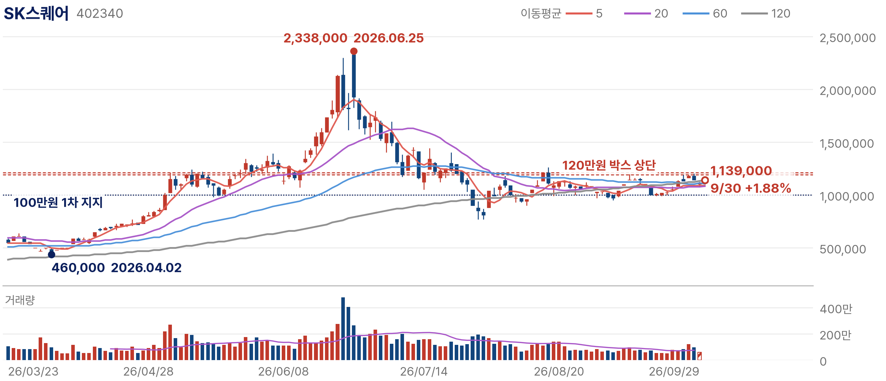
대응: 100만원 전후의 지지가 유지되는 동안 분할로 접근한다. 확인 지점은 10월 하순 SK하이닉스 3분기 실적과 4분기 가이던스, 자사주 소각 집행, 월말 NAV 공시의 할인율이다. SK하이닉스의 4분기 추정치가 하향으로 돌아서거나 SK하이닉스 주가가 올라도 할인율이 40%대에서 줄지 않으면 할인 축소 논리를 철회하며, 100만원 종가 이탈 시 6월 급등 이전 가격대까지 되돌림 가능성을 열어둔다.
HD현대는 조선(HD한국조선해양)과 정유(HD현대오일뱅크), 전력기기·건설기계 계열사를 거느린 지주회사다. 한 종목으로 서로 다른 두 이익 사이클을 담는다는 점이 특징이고, 올해 연결 이익 추정치는 반년 사이 70% 가까이 올라갔다. 관건은 이익 상향과 58%의 NAV 할인이 함께 있는 괴리가 주가 재평가로 좁혀지는가다.
주가·거래량: 9월 30일 종가 202,500원, 전일 대비 0.50% 상승. 5월 4일 고점 336,000원 대비 39.73% 낮고 7월 29일 저점 178,000원 대비로는 13.76% 높다. 9월 중순 26만원 부근까지 반등했다가 다시 20·60·120일 이동평균선 아래로 내려왔다.
투자 논리: HD현대의 이익은 조선(HD한국조선해양), 정유(HD현대오일뱅크), 전력기기·건설기계 자회사가 함께 만든다. 한 종목으로 조선과 정유라는 서로 다른 이익 사이클을 동시에 담는다. 논리는 자회사 이익 증가 → 연결 이익 추정치 상향 → 지주 NAV 증가 → 할인율 축소의 순서로 전달되며, 앞의 세 단계는 숫자로 확인됐다.
펀더멘털: 2분기 연결 매출은 22조 4,094억원, 영업이익은 4조 1,246억원으로 전년 대비 262.2%, 전 분기 대비 45.5% 늘었고, HD한국조선해양이 1조 6,451억원, HD현대오일뱅크가 1조 8,241억원의 영업이익을 냈다. 2026년 연결 영업이익 추정치는 4월 8조 1,420억원에서 9월 13조 7,780억원으로 69% 높아졌다. 두 자회사가 연결 영업이익의 84%를 만들었고 정유가 조선보다 컸다. 이익 상향의 한 축이 유가와 정제마진이라는 가격 변수에 기대고 있다는 뜻이다.
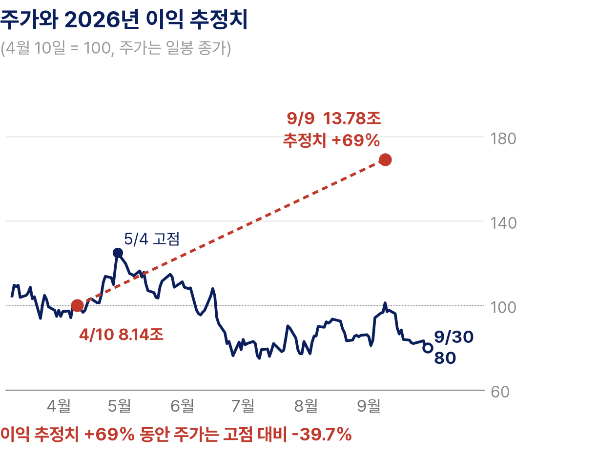
사업 구조: 연결 이익은 크게 세 갈래다. 조선은 2~3년 전 수주한 선박이 건조 진행에 따라 매출로 인식되는 구조여서 이익의 가시성이 높고, 정유는 유가와 정제마진에 따라 분기마다 크게 흔들린다. 2분기에는 정유(44%)가 조선(40%)보다 많은 이익을 냈고, 전력기기·건설기계 등 기타(연결조정 포함)가 16%를 채웠다. 지주회사 주가는 자회사 지분가치의 합에 할인이 적용돼 움직이므로 조선 자회사의 주가와 유가가 함께 NAV를 결정한다. HD한국조선해양을 연결 자회사로 두고 있어 두 종목을 함께 담으면 조선 사이클 노출이 겹친다.
밸류에이션: 밸류에이션은 PER과 NAV 할인율을 함께 본다. 낮은 PER이 곧 반등 시점을 뜻하지는 않는다. 추정치 상향의 한 축이 유가에 기댄 정유 이익이어서 시장은 그 지속성을 할인하고 있고, 지주 할인도 자회사 실적만으로 줄지 않는다. 이익 방향은 위, 가격은 아래, 배수는 5.9배라는 조합이 편입 근거이고, 재평가의 속도는 정유 이익이 결정한다.
판단: 조선이 이익 상향이 가장 강한 업종 가운데 하나인 가운데 HD현대는 이익 상향과 주가 조정이 겹친 종목이다. 이익 추정치가 70% 가까이 오르는 동안 주가는 고점 대비 40% 낮아져 이익 대비 배수가 빠르게 낮아졌다. 9월 9일 증권사 자료 기준으로 12개월 선행 PER은 5.9배, NAV 대비 할인율은 58%다.
기술적 위치·판단: 주가는 5월 4일 고점 이후 7월 29일 178,000원까지 밀렸고, 9월 10일 약 26만원까지 반등했으나 다시 20·60일선(약 22.5만원)과 120일선(약 23.8만원) 아래로 내려와 9월 29일 장중 20만원을 터치했다. 이익 상향과 가격 하락이 겹친 전형적인 괴리 구간이다. 22.5만~23.8만원의 이평 밀집대를 종가로 회복해야 반등이 추세로 바뀐다. 19만~20만원 지지가 무너지면 7월 저점 재시험 가능성이 커진다.
| 구분 | 가격 | 해석 | 성격 |
|---|---|---|---|
| 2차 저항 | 약 26만원 | 9월 반등 고점. 회복 시 5월 이후 하락 추세 이탈 | 저항 |
| 추세 회복 | 22.5만~23.8만원 | 20·60·120일선 밀집. 종가 회복 시 이익과 가격의 괴리 축소 시작 | 확인 |
| 1차 지지 | 19만~20만원 | 8월 초 저점과 9월 29일 장중 저가 | 지지 |
| 무효화 | 178,000원 | 7월 저점. 이탈 시 이익 사이클 재점검 신호 | 무효화 |
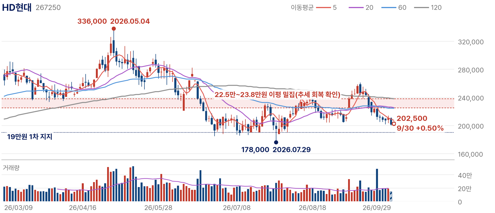
대응: 조정 시 분할로 접근한다. 10월 말~11월 초 3분기 실적에서 조선과 정유 이익이 함께 유지되는지(3분기 영업이익 추정치 3조 2,000억원, 전년 대비 +88.6%), 브렌트와 정제마진의 방향, 자회사 지분가치에 따른 NAV 할인율을 확인한다. 유가 급락으로 정유 이익이 줄고 조선 자회사의 마진 개선이 멈춰 2026년 추정치가 하향되면 이익 상향 논리를 철회하며, 7월 저점 178,000원 이탈은 이익 사이클 재점검 신호로 본다.
HD한국조선해양은 HD현대중공업·HD현대삼호 등 조선 계열사를 거느린 조선 부문 중간지주회사다. 조선 이익은 2~3년 전에 받은 수주가 지금 매출로 인식되면서 만들어지고, 상반기에 연간 수주 목표의 96%를 채워 일감도 충분하다. 이제 확인할 것은 고선가 수주가 실제 마진 개선과 이익 Revision으로 얼마나 빠르게 전환되는가다.
주가·거래량: 9월 30일 종가 323,500원으로 전일과 같다. 5월 11일 고점 488,000원 대비 33.71% 낮고 7월 29일 저점 314,000원 대비로는 3.03% 높을 뿐이다. 5월 고점 이후 20·60·120일 이동평균선 아래에서 고점과 저점을 함께 낮추고 있다.
투자 논리: 조선 이익은 2~3년 전에 받은 고선가 수주가 매출로 인식되면서 올라간다. 흐름은 고선가 수주 → 건조 → 매출 인식 → 선종 믹스 → 마진 → 이익 Revision이며, 2분기에 매출 인식과 마진 단계가 숫자로 확인됐다.
펀더멘털: 2분기 매출은 8조 9,270억원(+20%), 영업이익은 1조 6,451억원(+73%)으로, 영업이익 증가율이 매출 증가율을 크게 웃돌아 고선가 물량과 생산성 개선이 마진으로 이어지고 있다. HD현대중공업이 1조 399억원(+121%), HD현대삼호가 5,341억원(+44%)을 냈다. 조선 계열사는 상반기에 163억 8,000만달러를 수주해 연간 목표의 96%를 채웠고, VLGC 38척과 LNG선 17척 등 고부가 선종이 중심이다. 수주잔고는 500척 이상, 3년 6개월치 일감이다. 영업이익률은 18.4%로, 증가율로 역산한 1년 전 약 12.8%보다 5%p 이상 높다.
사업 구조: 매출은 수주 시점이 아니라 건조 진행에 따라 인식된다. 그래서 올해 이익은 2~3년 전 선가가 결정하고, 올해 받는 수주의 선가는 그 이후의 이익을 결정한다. 2분기 영업이익의 대부분은 HD현대중공업과 HD현대삼호에서 나왔다. 수주잔고 3년 6개월치는 매출의 가시성을 보장하지만 마진까지 보장하지는 않으므로, 판단 변수는 수주량이 아니라 신규 수주의 선가와 LNG선·VLGC 비중이다.
밸류에이션: 조선주의 배수는 이익 레벨보다 그 이익이 얼마나 오래 유지되는지에 반응한다. 지금 시장이 확인하려는 것은 앞으로 인식될 물량의 선가다. 신규 수주 선가가 유지되면 지금의 이익률이 몇 년간 이어진다는 근거가 되고, 선가가 꺾이면 사상 최대 이익도 고점으로 해석된다. 저점 부근의 가격 위치만으로 싸다고 보지 않으며, 배수가 회복되는 조건은 선가의 유지다.
판단: 2분기 실적은 9월 Monthly 전에 나온 숫자여서, 최선호 재분류의 근거는 이후 주가가 7월 저점 부근까지 밀리는 동안 업종 추정치 상향이 유지돼 이익 대비 배수가 5월보다 크게 낮아진 점이다. 수주 목표를 조기에 채운 만큼 하반기 판단 기준은 수주량에서 선가와 선종 믹스로 옮겨간다.
기술적 위치·판단: 5월 고점 이후 주가는 고점과 저점을 함께 낮추는 하락 추세에 있고 5·20·60·120일선이 모두 주가 위에 있다. 반등 고점도 8월 11일 약 41만원, 9월 11일 약 37만원으로 낮아졌다. 60일선(약 36만원)과 9월 반등 고점(약 37만원)을 종가로 회복해야 하락 추세 이탈로 볼 수 있다.
| 구분 | 가격 | 해석 | 성격 |
|---|---|---|---|
| 2차 저항 | 약 41만원 | 8월 반등 고점. 120일선(약 38.6만원) 위 공급 구간 | 저항 |
| 추세 전환 | 36만~37만원 | 60일선과 9월 반등 고점. 종가 회복 시 하락 추세 이탈 | 확인 |
| 1차 저항 | 약 34.5만원 | 20일선. 단기 반등의 첫 관문 | 저항 |
| 무효화 | 314,000원 | 7월 저점. 종가 이탈 시 접근을 늦춘다 | 무효화 |
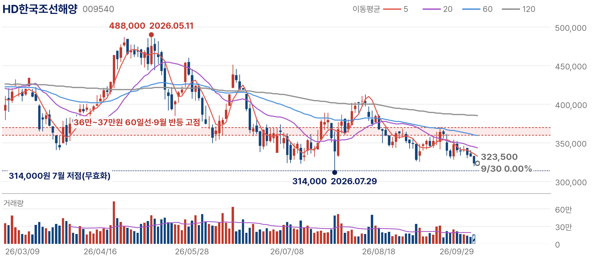
대응: 저점권에서 분할로 접근한다. 10월 하순 3분기 실적의 영업이익률, 신규 수주의 선가와 LNG선·VLGC 비중, 선별 수주로 슬롯 수익성을 높이겠다는 방침이 실제 선가로 나타나는지를 확인한다. 신규 수주 선가가 하락으로 돌아서거나 분기 영업이익률이 두 분기 연속 낮아지면 마진 개선 논리를 재검토하고, 7월 저점 314,000원을 종가로 이탈하면 접근을 늦춘다.
LS ELECTRIC은 초고압 변압기부터 배전반·차단기, 자동화까지 전력을 받아 나누는 기기를 만든다. AI 데이터센터의 전력 병목이 발전소를 넘어 변전·배전과 건물 안의 전력 제어로 번지면서 신규 수주가 한 분기 매출을 웃돌고 있다. 10월의 쟁점은 빠르게 쌓인 수주잔고가 매출과 이익률로 계속 전환되는가다.
주가·거래량: 9월 30일 종가 205,000원으로 전일과 같다. 5월 7일 고점 347,500원 대비 41.01% 낮고 3월 9일 저점 127,000원 대비로는 61.42% 높다. 7월 이후 20만원 안팎에서 20·60일 이동평균선과 함께 움직이고 있고 120일선이 바로 위에 있으며, 거래량은 급등기보다 뚜렷하게 줄었다.
투자 논리: AI 데이터센터의 전력 병목은 발전소에서 끝나지 않고 변전과 배전, 건물 안의 전력 제어까지 이어진다. LS ELECTRIC은 초고압 변압기부터 배전반·차단기, 자동화까지 전력을 받아 나누는 기기를 공급한다. 논리는 데이터센터 투자 → 변압·배전 설비 발주 → 신규 수주 → 수주잔고 → 매출 인식 → 이익률 개선으로 이어지며, 2분기에는 이 모든 단계가 한꺼번에 숫자로 확인됐다.
펀더멘털: 2분기 매출은 1조 5,770억원(+32.2%), 영업이익은 1,785억원(+64.4%)으로 분기 최대였고, 신규 수주 약 2조 1,000억원으로 수주잔고가 한 분기 만에 1조 4,000억원 늘어 7조원이 됐다. 북미 매출도 약 4,000억원으로 분기 최대였고 8월에는 미국 데이터센터에 486억원 규모의 배전 솔루션 공급 계약을 맺었다. 신규 수주가 매출의 1.3배여서 잔고가 매출보다 빠르게 쌓였고, 영업이익률은 역산한 1년 전 약 9.1%에서 11.3%로 올랐다.
사업 구조: 매출은 수주 후 제작·납품 시점에 인식되므로 수주잔고가 앞으로의 매출을 먼저 보여준다. 2분기 말 잔고 7조원은 2분기 매출의 약 4.4배이고, 북미 매출 약 4,000억원은 전체 매출의 약 25%로 데이터센터 전력 투자가 실제 매출 비중으로 올라오고 있다. 이익률을 좌우하는 변수는 초고압 변압기 매출 비중이다.
밸류에이션: 배수 판단의 기준은 업종 평균이 아니라 이익 증가 속도다. 주가가 3개월째 20만원 안팎에 머무는 동안 분기 영업이익은 전년 대비 64% 늘어 이익 대비 배수는 가격 조정 없이도 내려오고 있다. 수주잔고가 늘어나는 한 이익 성장이 배수를 흡수하며, 잔고 정체는 곧 배수 부담의 재부각을 뜻한다.
판단: 9월 Monthly에서는 밸류에이션 부담으로 관심종목에 뒀다. 2분기 실적과 수주잔고는 그 전에 나온 숫자이고, 승격의 근거는 3개월 횡보 동안 이익 대비 배수가 내려오고 20만원 하단이 반복해 지켜진 위험 대비 보상의 개선이다. 전력기기 업종 PER이 높은 편인 만큼 저평가가 아니라 이익 성장으로 배수를 낮춰가는 과정으로 본다.
기술적 위치·판단: 7월 30일 약 14.7만원 급락 저점 이후 주가는 20만원 안팎에서 20·60일선과 함께 움직이고 있고 120일선(약 22만원)이 바로 위에 있다. 8월 28일 약 22.3만원, 9월 22일 약 21.6만원에서 막혀 상단이 낮아지는 수렴 형태다. 120일선과 8월 고점이 겹친 21.6만~22.3만원을 종가로 넘어서야 3개월 박스가 추세로 바뀐다.
| 구분 | 가격 | 해석 | 성격 |
|---|---|---|---|
| 2차 저항 | 약 27만원 | 7월 초 고점. 7월 급락 이전 가격대 | 저항 |
| 추세 전환 | 21.6만~22.3만원 | 120일선과 8·9월 반등 고점. 종가 회복 시 추세 전환 | 확인 |
| 1차 지지 | 20만원 | 20·60일선, 3개월 박스 하단. 이탈이 업종 배수 조정과 겹치면 비중 축소 | 지지 |
| 무효화 | 약 17.5만원 | 8월 3일 저점. 이탈 시 7월 급락 저점(약 14.7만원) 재시험 | 무효화 |
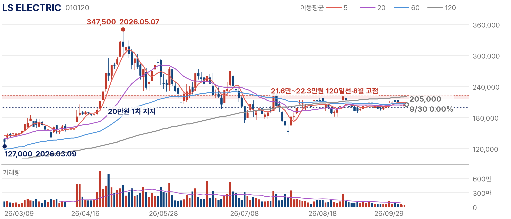
대응: 20만원 부근의 지지를 확인하며 분할로 접근하고, 120일 이동평균선의 종가 회복을 추세 전환의 근거로 삼는다. 10월 하순 3분기 실적의 수주잔고, 북미 데이터센터 배전 수주, 초고압 변압기 매출 비중을 확인한다. 수주잔고가 두 분기 연속 정체하거나 북미 매출이 감소로 돌아서면 논리를 재검토하고, 20만원 하단 이탈과 업종 배수 조정이 겹치면 비중을 줄인다.
한화에어로스페이스는 K9 자주포·천무 등 지상 무기체계와 항공엔진을 만드는 방산 기업이며 한화오션을 연결 자회사로 둔다. 유럽과 중동의 재무장 수요가 다년 계약으로 쌓이면서 지상방산 수주잔고는 38조원을 넘었다. 시장이 묻는 것은 쌓인 수주잔고가 방산 본업의 이익률로 얼마나 전환되는가, 그리고 연결 이익 가운데 본업의 몫이 얼마인가다.
주가·거래량: 9월 30일 종가 1,007,000원, 전일 대비 0.49% 하락. 3월 4일 고점 1,713,000원 대비 41.21% 낮고 7월 29일 저점 783,000원 대비로는 28.61% 높다. 8월 중순 128만원 부근까지 반등한 뒤 20·60일선 아래로 밀렸고, 하락하는 120일선은 115만원 부근에 있다.
투자 논리: 방산 이익은 AI 투자 사이클과 상관이 낮은 별도의 이익 흐름이다. 유럽과 중동의 재무장 수요가 다년 계약으로 쌓이면서 2분기 말 지상방산 수주잔고는 38조 3,000억원으로 2분기 지상방산 매출 2조 1,075억원의 18배 수준이다. 논리는 수출 계약 → 수주잔고 → 납품과 매출 인식 → 지상방산 이익률의 순서이고, 수주잔고 단계까지는 충분히 확인됐다.
펀더멘털: 2분기 연결 영업이익은 1조 3,655억원으로 분기 처음 1조원을 넘었고, 지상방산 수출 매출은 1조 2,324억원으로 폴란드·이집트·중동 납품이 진행됐다. 9월 11일에는 크로아티아와 6,410억원 규모의 천무 수출 계약이 공시됐다. 수출이 지상방산 매출의 58%를 차지해 해외 납품이 매출의 중심이 됐고, 잔고 38조 3,000억원은 분기 매출 기준 약 4.5년치다.
사업 구조: 연결 영업이익은 지상방산, 연결 자회사 한화오션, 항공엔진 등 기타로 나뉜다. 2분기 1조 3,655억원 가운데 한화오션이 54%, 지상방산이 39%를 차지해, 연결 이익이 분기 처음 1조원을 넘은 데에는 조선 자회사의 기여가 컸다. 방산 매출은 계약 후 생산·납품 일정에 따라 인식되므로 38조원 잔고의 가치는 납품 일정과 수출 물량의 마진이 결정한다.
밸류에이션: 주가는 3월 고점 대비 41% 낮은 위치에 있고, 투자 판단은 잔고의 크기보다 잔고가 이익으로 바뀌는 속도에 달려 있다. 지상방산 영업이익률은 2분기 약 25%(5,330억원 ÷ 2조 1,075억원)로 높지만 이익 증가는 2%에 그쳤다. 재평가의 조건은 수출 납품 확대가 지상방산 이익 증가율로 확인되는 것이다.
판단: 9월 Monthly가 제시한 재분류 기준인 실제 계약 공시가 충족돼 최선호로 올렸다. 연결 이익에는 한화오션 영업이익 7,361억원이 포함돼 있고 지상방산 영업이익은 5,330억원으로 2% 증가에 그쳐, 방산 본업의 가시성과 연결 이익의 증가 폭은 구분해서 봐야 한다. 한화오션 연결로 HD현대·HD한국조선해양과 조선 사이클 노출이 겹친다는 점도 포트폴리오 차원에서 감안한다.
기술적 위치·판단: 3월 4일 고점 이후 7월 29일 783,000원까지 밀렸고, 8월 19일 약 129만원까지 반등한 뒤 다시 20·60일선 아래로 밀렸다. 하락하는 120일선은 115만원 부근에 있고 9월 반등도 115만원 부근(9월 14일)에서 멈췄다. 현재가는 20·60일선(약 105만~108만원) 아래에 있어 이동평균선을 회복하는 흐름을 확인한 뒤 접근하는 것이 원칙이다. 115만원 회복은 추세 전환, 100만원 이탈은 8월 초 저점대 재시험 신호다.
| 구분 | 가격 | 해석 | 성격 |
|---|---|---|---|
| 2차 저항 | 약 129만원 | 8월 반등 고점 | 저항 |
| 추세 회복 | 115만원 | 하락하는 120일선과 9월 반등 고점. 종가 회복 시 추세 전환 | 확인 |
| 1차 지지 | 100만원 | 9월 29일 장중 저가 | 지지 |
| 무효화 | 783,000원 | 7월 저점. 이탈 시 계약 모멘텀과 무관한 수급 악화 | 무효화 |
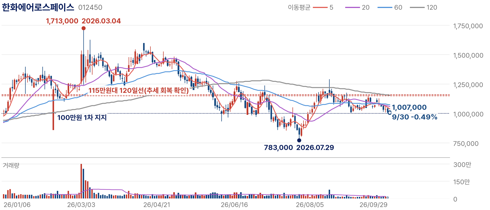
대응: 이동평균선을 회복하는 흐름을 확인한 뒤 접근한다. 유럽·중동 추가 수출 계약, 3분기 지상방산 영업이익률, 폴란드 등 기존 계약의 K9 자주포·천무 납품 일정이 확인 대상이다. 지상방산 영업이익률이 두 분기 연속 하락하거나 수출 납품이 지연되면 가시성 논리를 재검토하며, 7월 저점 783,000원 이탈은 계약 모멘텀과 무관한 수급 악화로 본다.
DB손해보험은 장기보험(건강·상해 등)과 자동차보험, 일반보험을 판매하는 손해보험사다. 이번 Monthly에서는 장기금리가 높고 변동성이 큰 10월에 흔들리지 않는 이익을 가진 완충 자산으로 편입했다. 확인할 것은 장기보험 이익이 일회성 요인 없이 지속되고, 낮아진 자본비율이 주주환원 여력을 지킬 수 있는가다.
주가·거래량: 9월 30일 종가 185,900원, 전일 대비 2.97% 하락. 2월 23일 고점 237,000원 대비 21.56% 낮고 1월 14일 저점 120,600원 대비로는 54.15% 높다. 60·120일 이동평균선이 우상향하는 가운데 주가는 30일 20일선 아래로 내려왔다.
투자 논리: 보험주를 금리 수혜로만 보지 않는다. 10월에 필요한 것은 장기금리가 높고 변동성이 큰 환경에서도 흔들리지 않는 이익이며, DB손해보험의 이익은 장기보험손익과 CSM 상각이 중심이다. CSM은 이미 판매한 보험계약에서 앞으로 인식될 이익의 저장고여서, 잔액이 유지되는 한 장기보험손익이 매 분기 상각을 통해 나온다.
펀더멘털: 2분기 순이익은 7,111억원으로 54.6% 늘어 분기 최대였고, 보험손익 5,618억원(+109.9%) 가운데 장기보험이 5,105억원(+98.6%)이었다. 6월 말 CSM 잔액은 원수 기준 12조 8,000억원이다. 장기보험손익이 보험손익의 91%를 차지해 이익의 중심이 장기보험이라는 점이 숫자로 확인된다. 다만 상반기 순이익 9,796억원에서 2분기를 빼면 1분기는 2,685억원이어서 분기 이익의 변동이 컸다.
사업 구조: 손해보험사의 이익은 보험손익과 투자손익으로 나뉘고, 보험손익은 다시 장기보험과 자동차보험·일반보험으로 나뉜다. 2분기 보험손익은 대부분 장기보험에서 나왔고 자동차보험의 기여는 미미했다. 이익의 질을 보려면 장기보험손익이 손해율 개선과 CSM 상각처럼 반복되는 항목에서 나왔는지, 손실계약 환입 같은 일회성 항목에서 나왔는지를 구분해야 한다.
밸류에이션: 보험주의 가격 판단은 PER보다 이익의 지속성과 자본비율에 좌우된다. 주가는 2월 고점 대비 21.56% 낮지만 2분기 사상 최대 이익에는 반복되기 어려운 환입이 섞여 있어, 낙폭만으로 저평가를 판단하지 않는다. K-ICS 비율이 200%대 초반으로 내려온 만큼 자본 여력이 주주환원의 상한을 정한다. 완충 자산의 역할은 높은 이익 레벨이 아니라 흔들리지 않는 이익에서 나온다.
판단: 9월 Monthly에서는 이익 추정치 상향 강도가 같은 업종의 다른 종목에 뒤져 관심종목으로 뒀다. 2분기 실적은 그 전에 발표돼 승격의 근거가 아니며, 9월에 장기금리가 높아지고 변동성이 커져 이익 변동이 작은 완충 자산의 역할이 커진 점을 근거로 올렸다. 이 역할은 위험선호에 민감한 디지털자산과 반대편에 있다. 2분기 개선에는 장기위험 손해율 개선과 함께 손실계약 환입이 포함됐고 자동차보험 손익은 62억원으로 80.6% 줄었으며, 상반기 순이익은 9,796억원(+8.0%)이다. 손실계약 환입은 반복되기 어려운 항목이므로 저평가 논리보다 이익의 지속성으로 판단한다.
기술적 위치·판단: 1월 14일 저점에서 2월 23일 고점까지 급등한 뒤 7월까지 조정을 거쳤고, 8월 이후 다시 고점을 높였다. 60일선(약 17.7만원)과 120일선(약 16.4만원)이 우상향하는 가운데 주가는 20일선(약 19만원) 부근에서 움직인다. 9월 3일 약 20.8만원 고점 이후 18만~20만원에서 쉬다가 30일 20일선 아래로 밀려 추세는 살아 있지만 속도는 느려졌다. 60일선 지지가 유지되는 한 완충 역할은 유효하다.
| 구분 | 가격 | 해석 | 성격 |
|---|---|---|---|
| 2차 저항 | 237,000원 | 2월 고점 | 저항 |
| 1차 저항 | 20.5만~20.8만원 | 9월 고점. 돌파 시 추세 재가속 | 확인 |
| 현재 위치 | 185,900원 | 9월 30일 종가. 20일선(약 19만원) 하회, 상승 추세 속 숨 고르기 | 밀집 |
| 1차 지지 | 17.7만~18만원 | 60일선과 9월 저점 | 지지 |
| 중기 방어선 | 약 16.4만원 | 120일선. 이탈 시 상승 추세 훼손 | 무효화 |
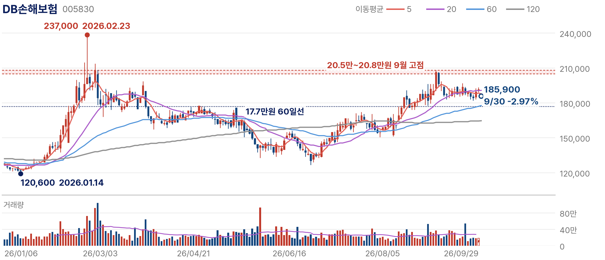
대응: 수익보다 변동성 완충이 목적이므로 비중을 제한해 담는다. 3분기 실적은 11월 중순 발표 예정이어서 10월에는 월별 손해율과 장기금리 경로, K-ICS 비율로 먼저 점검한다. K-ICS 비율은 3월 말 232.1%에서 6월 말 204.3%로 27.8%p 낮아졌다. 추가 하락으로 주주환원 여력이 줄거나 장기보험손익이 1분기 수준으로 되돌아가면 이익의 질 논리를 철회한다.
관심종목 6개는 투자 논리가 약한 종목이 아니다. 밸류에이션 부담, 실적 확인 필요, 신규 사업의 실적 기여, 외생 변수 의존도 가운데 하나가 최선호 종목보다 크다. 확인 항목이 충족되면 최선호군으로 재분류한다.
최선호 6종목과 같은 순서로 분석하되, 종목마다 관심종목으로 분류한 이유와 그 이유를 해소할 숫자를 함께 적었다. 이오테크닉스와 LS에코에너지는 신규 공정·고부가 제품의 실적 기여를, RF머트리얼즈와 ISC는 높아진 가격을 정당화할 증설과 매출을, 삼성SDI는 세액공제를 뺀 이익을, SK이노베이션은 외생 변수에 기댄 마진의 지속성을 확인해야 한다.
| 종목 | 핵심 질문 | 고점 대비 | 저점 대비 | 범위 위치 | 가격 단계 |
|---|---|---|---|---|---|
| 이오테크닉스 | 신규 레이저 공정이 실제 수주와 매출로 확인되는가 | -17.20% | +126.09% | 73% | 9월 고점 돌파 |
| RF머트리얼즈 | 요청 물량 2.5배를 생산능력과 매출이 따라가는가 | -22.35% | +378.85% | 73% | 급등 후 정배열 |
| ISC | AI 매출 믹스 개선이 높은 배수를 정당화하는가 | -28.19% | +125.74% | 59% | 이평선 회복 |
| LS에코에너지 | 매출 성장이 이익률 개선으로 따라오는가 | -43.17% | +95.00% | 39% | 120일선 돌파 |
| 삼성SDI | 턴어라운드가 AMPC를 뺀 이익으로 확인되는가 | -37.20% | +50.81% | 36% | 이평 밀집 |
| SK이노베이션 | 외생 변수로 오른 정제·윤활 마진이 지속되는가 | -9.65% | +69.67% | 79% | 정배열·고변동 |
관심종목의 범위 위치는 대부분 최선호보다 높다. RF머트리얼즈(73%)와 SK이노베이션(79%), 이오테크닉스(73%)는 이미 저점 대비 크게 오른 상태에서 실적 확인을 기다리고 있고, 관심종목의 리스크는 이익이 나빠지는 것보다 기대가 숫자보다 먼저 가격에 들어온 데 있다.
※ 관심종목은 최선호와 같은 기준으로 평가하되 10월 확인 변수의 확정성, 밸류에이션, 신규 사업 기여, 외생 변수 의존도에서 차이가 있다. 확인 항목이 충족되면 최선호군으로 재분류하며, 최선호 종목의 이익 상향이 멈추면 관심종목으로 조정한다.
이오테크닉스는 반도체용 레이저 장비 회사다. 패키지에 식별 정보를 새기는 레이저 마커가 매출의 기반이고, 웨이퍼를 열처리하는 어닐링 장비와 얇은 웨이퍼를 자르는 레이저 커팅 장비가 성장 축이다. 공정 고도화 방향은 우호적이며, 검증할 것은 신규 레이저 공정이 실제 수주와 매출로 확인되는가다.
주가·거래량: 9월 30일 종가 520,000원, 전일 대비 4.94% 상승. 6월 15일 고점 628,000원 대비 17.20% 낮고 7월 29일 저점 230,000원 대비로는 126.09% 높다. 8월 이후 20일선이 60·120일선을 차례로 넘어서며 추세가 돌아섰다.
투자 논리: 이오테크닉스는 반도체 패키지에 식별 정보를 새기는 레이저 마커의 주력 공급사이며 이 사업이 매출의 기반이다. 성장은 웨이퍼 표면을 레이저로 열처리하는 어닐링 장비와 얇은 웨이퍼를 자르는 레이저 커팅 장비에서 나온다. AI 서버용 메모리가 웨이퍼를 더 얇게 갈고 더 많이 쌓는 방향으로 가면서 레이저 가공의 적용 범위가 넓어질 수 있다. 연결고리는 메모리 공정 고도화 → 신규 레이저 공정 채용 → 신규 고객 수주 → 매출과 이익률이며, 지금 숫자로 보이는 것은 전체 이익률의 개선까지다.
펀더멘털: 최근 4개 분기(2025년 3분기~2026년 2분기) 매출은 4,447억원, 영업이익은 1,093억원으로 2025년 연간보다 각각 17%, 35% 많고 영업이익률은 21.2%에서 24.6%로 높아졌다. 이익이 매출보다 두 배 빠르게 늘었지만 이 숫자만으로는 개선이 기존 마커에서 왔는지 신규 장비에서 왔는지 구분되지 않는다. 그래서 핵심 확인 지표는 이익률이 아니라 신규 장비의 고객 수주다.
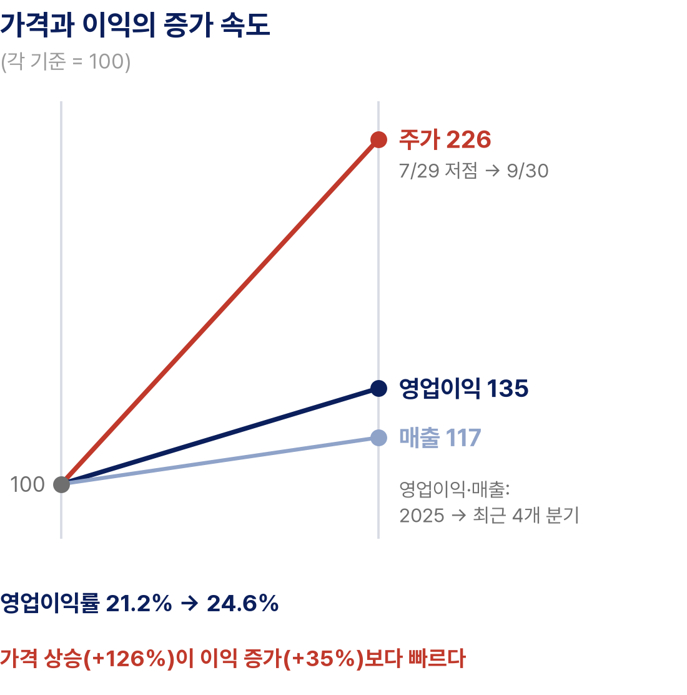
사업 구조: 매출의 기반은 반도체 패키지 후공정의 레이저 마커이고, 어닐링과 레이저 커팅은 웨이퍼 단계의 신규 공정이다. 마커는 반도체 생산량에 연동되는 수요인 반면 신규 장비는 고객의 공정 채택 여부에 따라 수주가 한 번에 늘거나 늦어질 수 있다. 신규 장비가 메모리 고객의 HBM·고적층 라인에 채택되면 매출 구성과 배수가 함께 바뀌지만, 채택 전까지는 기대가 가격에 먼저 반영된다.
밸류에이션: 현재 가격은 이익률 개선과 공정 확대 기대를 함께 반영하고 있다. 7월 저점에서 두 배 넘게 오르는 동안 최근 4개 분기 영업이익은 2025년 연간보다 35% 많은 수준이어서 가격 상승이 이익 증가보다 빠르다. 배수를 정당화할 다음 숫자는 신규 장비의 수주다.
판단: HBM 공정에서의 실제 채용과 매출 기여는 아직 숫자로 확인되지 않았다. 신규 장비의 실적 기여를 확인해야 한다는 점에서 관심종목으로 분류했다. 2월 27일 증권사 자료 기준 12개월 선행 PER은 50배를 웃돌았다. 당시 가격 기준의 과거 배수여서 현재 가격(520,000원)에 그대로 적용할 수 없지만, 좋은 공정 변화가 곧 좋은 진입 가격은 아니라는 점은 같다.
기술적 위치·판단: 6월 고점 이후 7월 29일까지 급락했다가 8월 이후 이동평균선이 정배열로 돌아섰다. 9월 30일에는 4.94% 오른 520,000원으로 9월 고점대(50.5만~51.1만원)를 종가로 넘어섰고, 20일선(약 45만원)과 60·120일선(약 42만~43만원)이 아래에서 받친다. 돌파가 거래량과 함께 유지되면 6월 고점대로 가는 경로가 열리지만, 그 전에 신규 수주 확인이 필요하다.
| 구분 | 가격 | 해석 | 성격 |
|---|---|---|---|
| 2차 저항 | 628,000원 | 6월 고점 | 저항 |
| 돌파 확인 | 50.5만~51.1만원 | 9월 고점대. 9월 30일 종가로 상향 돌파, 되돌림 시 지지 여부 확인 | 확인 |
| 1차 지지 | 약 45만원 | 20일선 | 지지 |
| 중기 방어선 | 42만~43만원 | 60·120일선. 이탈 시 8월 이후 추세 훼손 | 무효화 |
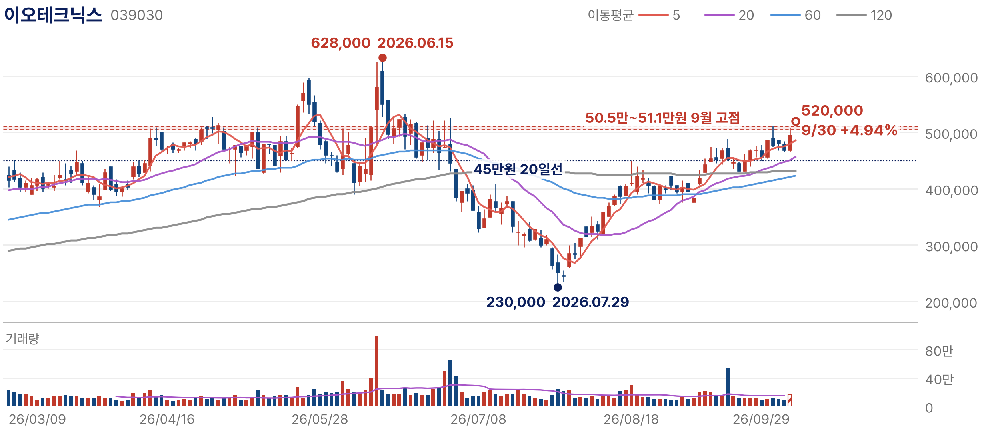
대응: 저점 대비 두 배 넘게 오른 만큼 신규 장비 수주가 배수를 정당화하는지 확인한 뒤 비중을 논한다. 어닐링·커팅 장비의 신규 고객 수주, 메모리 고객의 HBM·고적층 투자 일정, 10월 하순 메모리 대형사의 CAPEX 가이던스, 3분기 영업이익률 24% 유지 여부가 확인 대상이다. 신규 장비 매출이 늘지 않은 채 마커 중심의 구조가 이어지거나 분기 영업이익률이 20% 아래로 내려오면 공정 확대 논리를 재검토한다.
RF머트리얼즈는 광통신 소자와 RF 소자를 담는 특수 반도체 패키지를 만든다. AI 연결고리는 HBM이 아니라 GPU 서버 사이의 데이터 전송이고, 최대 고객 루멘텀은 2027년에 올해의 약 2.5배 물량을 요청했다(확정 수주가 아닌 요청 물량). 관건은 이 요청 물량을 생산능력과 매출이 제때 따라갈 수 있는가다.
주가·거래량: 9월 30일 종가 49,250원, 전일 대비 0.92% 상승. 5월 12일 고점 63,427원 대비 22.35% 낮고 1월 20일 저점 10,285원 대비로는 378.85% 높다. 차트의 과거 가격은 두 차례의 권리락이 반영된 수정주가다. 8월 이후 이동평균선이 정배열로 돌아섰고 9월에는 거래량이 급증했다.
투자 논리: RF머트리얼즈는 광통신 소자와 RF 소자를 담는 특수 반도체 패키지(케이스)를 만든다. 광증폭기용 펌프 레이저 패키지와 광트랜시버 보호 패키지가 주력이고 최대 고객은 미국 광통신 기업 루멘텀이다. AI 데이터센터에서 GPU 서버를 서로 잇는 광 연결이 늘수록 패키지 수요가 커지며, 이 회사의 AI 연결고리는 HBM이 아니라 서버 간 데이터 전송이다.
펀더멘털: 2025년 매출은 641억원(+44%)으로 영업이익이 흑자로 돌아섰고, 회사는 루멘텀이 2027년에 요청한 물량이 2026년의 약 2.5배라고 밝혔다. 회사 전망(2026년 1,000억원, 2027년 1,600억원)대로라면 2027년 매출은 2026년의 1.6배, 2025년의 2.5배다. 같은 2.5배라도 매출은 2025년 대비 전망이고 물량은 2026년 대비 고객 요청이어서 비교 기간이 다르며, 요청 물량은 확정 수주가 아니다. 수요 신호는 분명하지만 매출로 확정되려면 수주와 생산능력, 인도 시점이 확인돼야 한다.
사업 구조: 매출은 광통신 부품 고객에 패키지를 공급하며 발생하고, 최대 고객 루멘텀의 발주가 매출 경로를 결정한다. 고객 소자에 맞춰 설계되는 특수 패키지여서 한 번 채택되면 공급이 이어지지만, 고객의 증설·재고 조정이 곧바로 매출 변동으로 전달된다. 신공장이 2027년 말 완공되는 만큼 2027년 요청 물량을 기존 공장에서 얼마나 소화하는지가 매출 인식 시점을 좌우한다.
밸류에이션: 이 종목의 가격은 현재 이익이 아니라 2027년 매출 전망에 대한 가격이다. 전망이 회사 인터뷰 기준이고 증설 효과가 반영되기까지 시차가 있는 만큼, 분기 실적이 연 1,000억원 경로를 따라가는지가 배수의 근거가 된다. 경로를 밑도는 분기가 나오면 선반영된 기대가 가장 먼저 조정된다.
판단: 회사 인터뷰 기준으로 2026년 매출 1,000억원, 2027년 1,600억원 돌파가 예상되고, 안산 두 공장을 통합하는 약 9,900㎡ 규모의 신공장이 2027년 말 완공되면 생산능력이 약 2.5배로 늘어난다. 증설 효과가 실적에 반영되기까지 시간이 걸리고 단일 고객 의존도가 높다는 점에서 관심종목으로 분류했다. 연초 대비 4배 넘게 오른 가격은 2027년 매출 전망에 대한 기대를 앞서 반영했을 가능성이 크다.
기술적 위치·판단: 5월 고점 이후 7월 말까지 조정받았다가 8월 이후 정배열로 돌아섰고, 9월에는 거래량이 급증하며 9월 21일 약 5.1만원까지 올랐다. 20일선(약 4.2만원)이 가파르게 오르고 60·120일선은 약 3.7만원에 모여 있다. 가격이 이동평균선과 크게 벌어진 상태여서 추격보다 되돌림에서의 지지를 확인하는 편이 낫다.
| 구분 | 가격 | 해석 | 성격 |
|---|---|---|---|
| 2차 저항 | 63,427원 | 5월 고점 | 저항 |
| 1차 저항 | 약 5.0만~5.1만원 | 9월 21일 고점대. 9월 30일 종가 49,250원은 그 아래 | 확인 |
| 1차 지지 | 약 4.2만원 | 20일선 | 지지 |
| 중기 방어선 | 약 3.7만원 | 60·120일선. 이탈 시 가격이 실적을 앞서간 것으로 판단 | 무효화 |
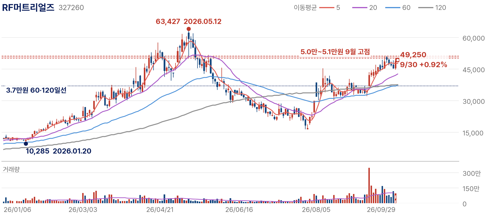
대응: 증설 일정과 수율이 확인되기 전까지 추격하지 않는다. 신공장 착공 일정과 투자 규모, 고객사 루멘텀의 데이터센터 광부품 수요, 3분기 매출이 연간 1,000억원 경로 위에 있는지를 확인한다. 루멘텀의 발주 계획이 줄거나 착공이 지연되면 물량 2.5배 전제가 흔들리며, 분기 매출이 경로를 밑돌고 60일선을 이탈하면 가격이 실적을 앞서간 것으로 판단한다.
ISC는 칩을 검사 장비에 연결하는 실리콘 러버 테스트 소켓을 만든다. AI 가속기와 ASIC은 칩이 크고 비싸 출하 전 테스트가 까다롭고, 그 수요가 이미 매출의 81%를 AI 관련 제품으로 바꿔 놓았다. 남은 질문은 AI 매출 믹스 개선과 증설이 높은 배수를 정당화할 만큼 이어지는가다.
주가·거래량: 9월 30일 종가 214,000원, 전일 대비 2.15% 상승. 4월 9일 고점 298,000원 대비 28.19% 낮고 1월 20일 저점 94,800원 대비로는 125.74% 높다. 7월 말 저점 이후 20·60·120일선을 차례로 회복했다.
투자 논리: AI 가속기와 ASIC은 칩이 크고 비싸 출하 전 테스트가 까다롭다. ISC는 칩을 검사 장비에 연결하는 실리콘 러버 테스트 소켓을 공급하며 데이터센터용 GPU·CPU·ASIC 고객 비중이 높다. 논리는 AI 칩 출하 증가 → 테스트 소켓 수요와 단가 → AI 매출 비중 확대 → 이익률 개선이며, 2분기에 AI 매출 비중과 이익률이 함께 올라갔다.
펀더멘털: 2분기 매출은 729억원(+41%)으로 분기 최대였고 영업이익은 213억원(+55%), 영업이익률은 29%다. AI 관련 매출은 591억원(+71%)으로 전체의 81%를 차지했고, 연간 생산능력은 약 21만 개에서 2029년 최대 64만 개로 늘릴 계획이다. 증가율로 역산하면 1년 전 AI 매출은 약 346억원으로 비중이 67% 수준이었다. AI 매출 비중이 한 해 동안 14%p 높아지는 사이 이익률도 약 26.6%에서 29%로 올랐다.
사업 구조: 매출은 칩 테스트 공정에서 교체되는 소켓 판매에서 나온다. 고객 칩의 설계가 바뀔 때마다 새 소켓이 필요해 신규 ASIC 고객이 늘수록 매출 기반이 넓어진다. 역산하면 비AI 매출은 1년 전보다 줄어, 성장은 전적으로 AI 칩에서 나오고 있다. 테스트 소켓 평균판매단가(ASP)와 증설 생산능력의 가동 시점이 다음 매출 레벨을 정한다.
밸류에이션: 배수는 AI 매출이 계속 늘어난다는 가정 위에 서 있다. 증설 계획대로라면 생산능력은 2029년까지 약 3배로 늘어나므로 배수가 낮아지는 경로는 가격 하락이 아니라 증설 물량의 매출화다. AI 매출 비중이 정체하는 순간 높은 배수가 가장 먼저 흔들린다.
판단: 실적은 AI 테스트 수요를 숫자로 보여주지만 좋은 산업이 곧 좋은 진입 가격은 아니다. 4월 10일 증권사 자료(당시 고점 부근 가격) 기준 2026년 추정 PER은 50배를 넘었다. 현재 가격(214,000원)은 그보다 30% 가까이 낮지만, 최신 추정치로 다시 계산한 배수가 확인되기 전까지 새 배수를 제시하지 않는다. 밸류에이션 부담이 커 관심종목으로 분류했다.
기술적 위치·판단: 4월 고점 이후 7월 말 약 10만원대까지 되돌렸다가 20·60·120일선을 차례로 회복했다. 9월 22일 약 22.1만원 고점 이후 20만원 위에서 움직이며, 20일선(약 18.8만원)과 120일선(약 19.1만원)이 19만원 부근에 모여 1차 지지대를 이룬다. 22만원 돌파에는 AI 매출 성장의 재확인이 필요하고, 19만원 이탈은 회복 추세의 훼손이다.
| 구분 | 가격 | 해석 | 성격 |
|---|---|---|---|
| 2차 저항 | 298,000원 | 4월 고점 | 저항 |
| 1차 저항 | 21.5만~22.1만원 | 9월 고점 | 확인 |
| 1차 지지 | 약 19만원 | 20·120일선 밀집 | 지지 |
| 중기 방어선 | 약 17.7만원 | 60일선. 이탈 시 7월 이후 회복 추세 훼손 | 무효화 |
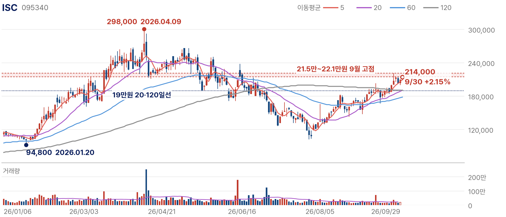
대응: 배수가 낮아지려면 증설이 계획대로 매출로 이어져야 하므로 이를 확인하며 접근한다. 신규 ASIC 고객 수주와 테스트 소켓 평균판매단가(ASP), 증설 생산능력의 가동 시점, 10월 하순 하이퍼스케일러 CAPEX 가이던스, HBM 테스트 솔루션의 매출화를 본다. AI 매출 비중이 정체하거나 분기 영업이익률이 25% 아래로 내려오면 단가 상승 논리를 재검토하고, 고객사 CAPEX 하향도 반증 신호로 본다.
LS에코에너지는 베트남 생산법인을 기반으로 초고압 케이블과 건물 내부의 대용량 전력 통로인 버스덕트를 만든다. LS ELECTRIC이 전력을 받아 나누는 기기라면 이 회사는 전력이 흐르는 길을 만든다. 매출은 사상 최대다. 다만 매출 성장이 고부가 제품 믹스를 통해 이익률 개선으로 따라오는지는 아직 확인 단계다.
주가·거래량: 9월 30일 종가 62,400원, 전일 대비 0.48% 상승. 5월 14일 고점 109,800원 대비 43.17% 낮고 7월 30일 저점 32,000원 대비로는 95.00% 높다. 9월 중순 대량 거래와 함께 120일선을 돌파했고 20·60일선도 위로 돌아섰다.
투자 논리: LS ELECTRIC이 전력을 받아 나누는 기기라면 LS에코에너지는 전력이 흐르는 길을 만든다. 베트남 생산법인을 기반으로 초고압 케이블과 건물 내부의 대용량 전력 통로인 버스덕트를 공급하며, 서버 랙까지 큰 전류를 보내야 하는 데이터센터에서 버스덕트 사용이 늘고 있다. 상반기 데이터센터향 버스덕트 매출은 1년 전의 약 3배였고, 400kV급 초고압 케이블의 유럽·북미 사전적격성평가를 마쳐 프리미엄 전력망 입찰에 참여할 수 있게 됐다.
펀더멘털: 숫자는 두 방향을 가리킨다. 데이터센터향 버스덕트 매출이 약 3배로 늘어 고부가 제품의 성장은 확인됐지만, 상반기 영업이익률은 역산한 1년 전 약 8.1%에서 7.1%로 낮아졌다. 분기로 나누면 1분기 영업이익은 약 201억원, 2분기는 253억원이다. 고부가 제품의 절대 규모가 아직 전체 이익률을 바꿀 만큼 크지 않다는 뜻이다.
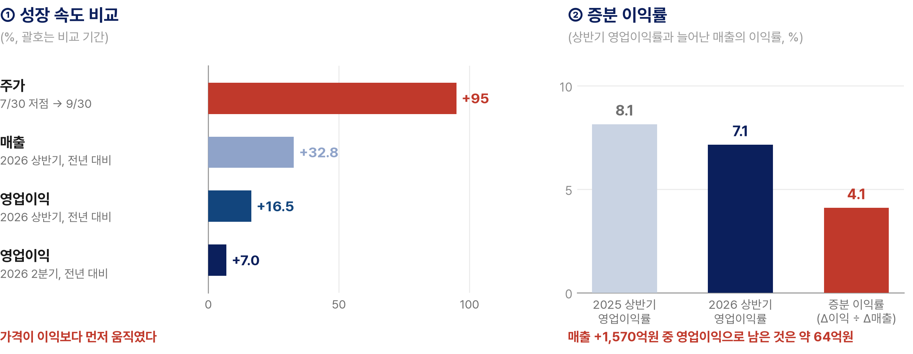
사업 구조: 매출은 케이블·버스덕트 판매에서 나오며 원재료인 구리 가격이 판가에 연동돼, 구리 가격이 오르면 매출이 먼저 커진다. 이 부분은 이익을 크게 늘리지 않으므로 매출 성장률만으로 사업을 평가하면 과대해석이 생긴다. 이익률을 올리는 것은 데이터센터 버스덕트와 400kV급 초고압 케이블 같은 고부가 제품의 비중이고, 초고압 케이블의 유럽·북미 입찰 결과가 다음 단계의 매출을 정한다.
밸류에이션: 가격 상승의 대부분은 이익 증가가 아니라 제품 믹스 개선에 대한 기대가 만든 배수 확대다. 좋은 산업이 곧 좋은 진입 가격은 아니며, 배수가 유지되려면 3분기 영업이익률이 반등해 기대의 일부가 숫자로 바뀌어야 한다.
판단: 상반기 매출은 6,358억원(+32.8%)으로 사상 최대였지만 영업이익은 454억원(+16.5%), 2분기 영업이익은 253억원(+7%)에 그쳤다. 구리 가격이 판가에 전가되는 구조여서 매출이 먼저 커지고 수익성은 고부가 제품 비중이 정한다. 두 달 만에 주가가 두 배 가까이 오른 반면 이익 증가율은 한 자릿수여서 가격이 이익을 앞서가고 있고, 이익률 개선을 확인해야 한다는 점에서 관심종목으로 분류했다.
기술적 위치·판단: 7월 30일 저점 이후 9월 중순 대량 거래와 함께 120일선(약 5.7만원)을 돌파했고 9월 23일 약 6.8만원까지 올랐다. 20·60일선(약 5.2만원)이 뒤따라 올라오는 중이어서 가격과 이동평균선의 간격이 크다. 120일선 위에서 되돌림을 소화하면 돌파가 유효하고, 다시 이탈하면 대량 거래 돌파가 실패한 것이다.
| 구분 | 가격 | 해석 | 성격 |
|---|---|---|---|
| 2차 저항 | 109,800원 | 5월 고점 | 저항 |
| 1차 저항 | 6.5만~6.8만원 | 9월 고점 | 저항 |
| 돌파 기준선 | 약 5.7만원 | 120일선. 이탈 시 대량 거래 돌파 실패로 판단 | 확인 |
| 중기 방어선 | 약 5.2만원 | 20·60일선 밀집 | 지지 |
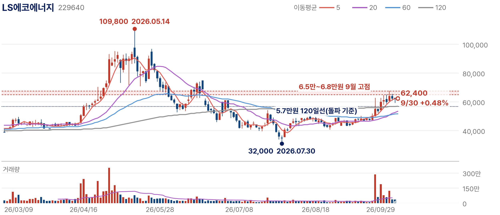
대응: 돌파 이후의 되돌림을 확인하며 접근한다. 데이터센터 버스덕트 신규 수주, 유럽·북미 초고압 케이블 입찰 결과, 3분기 영업이익률, 구리 가격이 확인 대상이다. 3분기에도 매출과 이익 증가율의 격차가 좁혀지지 않으면 제품 믹스 개선 논리를 재검토하고, 120일선을 다시 이탈하면 대량 거래를 동반한 돌파가 실패한 것으로 본다.
삼성SDI는 전기차·ESS·IT기기용 배터리를 만든다. 전기차 수요가 부진한 가운데 AI 데이터센터와 전력망에 필요한 ESS와 UPS·BBU용 배터리가 새 수주원이 됐고, 2분기에는 7개 분기 만에 흑자로 돌아섰다. 다음 검증 대상은 턴어라운드가 미국 세액공제(AMPC)가 아닌 ESS 사업 자체의 이익으로 확인되는가다.
주가·거래량: 9월 30일 종가 515,000원, 전일 대비 0.78% 상승. 4월 22일 고점 820,000원 대비 37.20% 낮고 7월 29일 저점 341,500원 대비로는 50.81% 높다. 8월 반등 이후 20·60·120일선이 모인 51만~55만원대에서 방향을 찾고 있다.
투자 논리: 삼성SDI를 전기차 배터리 반등으로 보지 않는다. 10월 시장에서 보는 이유는 AI 데이터센터와 전력망에 필요한 ESS와 UPS·BBU용 배터리다. 북미의 비중국계 각형 ESS 배터리 공급사라는 위치가 수주로 확인되고 있다. 3월 미국 에너지 기업과 1조 5,000억원 규모(2026~2029년)의 ESS 배터리 공급 계약을 맺었고 2025년 말에도 2조원을 넘는 LFP ESS 계약을 체결했다. 계약 물량은 스텔란티스와의 미국 합작공장(인디애나)에서 생산한다.
펀더멘털: 턴어라운드는 단계별로 나눠 봐야 한다. 1분기 영업손실 1,556억원에서 2분기 영업이익 2,038억원으로 한 분기 만에 3,594억원이 개선됐고, 그 가운데 AMPC가 1,077억원이다. AMPC를 빼도 961억원 흑자여서 사업 자체의 개선은 있었지만 여기에도 관세 환급이 섞여 있다. ESS 계약 3조 5,000억원 이상이 매출로 인식되는 속도가 AMPC 제외 이익의 방향을 정한다.
사업 구조: 매출의 큰 축은 여전히 전기차 배터리이고 ESS·UPS·BBU가 성장 축이다. 미국에서 생산한 배터리에는 AMPC가 붙어 이익을 보태므로, 미국 생산 물량이 늘수록 보고 이익과 사업 이익의 차이가 커진다. ESS 계약 물량을 인디애나 합작공장에서 생산하는 구조여서 미국 LFP 라인의 양산 시점이 ESS 매출과 AMPC를 함께 결정한다.
밸류에이션: 보고 이익 기준 배수는 AMPC가 보탠 이익 위에 서 있어 실제보다 낮아 보일 수 있다. 판단 기준은 AMPC를 뺀 영업이익의 방향이며, 이 이익이 분기마다 늘어야 지금 가격이 설명된다. EV 부진을 ESS가 메우는 속도가 확인되기 전까지 흑자 전환 자체를 재평가 근거로 쓰지 않는다.
판단: 2분기 매출은 3조 7,688억원(+18.5%), 영업이익은 2,038억원으로 1분기 영업손실 1,556억원에서 7개 분기 만에 흑자로 돌아섰다. 그러나 미국 생산 세액공제(AMPC) 1,077억원을 빼면 961억원이고 관세 환급도 포함돼 이익의 질은 아직 확인이 필요하다. 저점 대비 50% 오른 가격은 흑자 전환을 이미 반영했으므로 다음 상승은 세액공제를 뺀 이익의 증가로 설명돼야 하며, 이 점에서 관심종목으로 분류했다.
기술적 위치·판단: 4월 고점 이후 7월 29일까지 밀렸다가 8월 반등으로 9월 1일 약 60만원까지 회복했다. 이후 20·60·120일선이 51만~55만원대에 모여 방향을 찾고 있고, 9월 29일에는 20일선(약 54.6만원) 아래로 밀려 60일선(약 51.3만원) 부근까지 내려왔고 30일 515,000원으로 소폭 반등했다. 51만원 부근은 7월 이후 반등 추세를 지키는 마지막 지지다.
| 구분 | 가격 | 해석 | 성격 |
|---|---|---|---|
| 2차 저항 | 약 60만원 | 9월 초 고점 | 저항 |
| 1차 저항 | 53만~55만원 | 20·120일선. 회복 시 방향 재설정 | 확인 |
| 1차 지지 | 51만원 | 60일선. 이평선 밀집대 하단 | 지지 |
| 무효화 | 51만원 부근 이탈 | 7월 이후 반등 추세 훼손 | 무효화 |
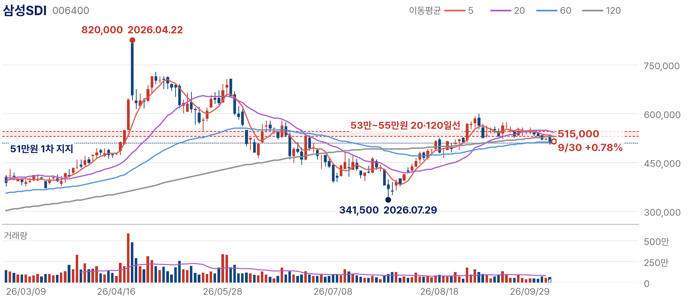
대응: 이동평균선 밀집대의 지지를 확인하며 접근한다. 10월 하순 3분기 실적의 AMPC 제외 영업이익, 북미 ESS 추가 수주, 미국 LFP 라인 양산 시점, 미국 세액공제 요건 변화를 확인한다. AMPC를 뺀 영업이익이 다시 적자로 돌아서거나 ESS 추가 수주가 끊기면 EV 부진을 ESS가 메운다는 논리를 재검토하고, 51만원 부근 이탈 시 7월 이후 반등 추세도 무너진 것으로 본다.
SK이노베이션은 국내 최대 정유사 SK에너지와 윤활유, LNG·발전의 SK이노베이션 E&S, 배터리 부문을 거느린 에너지 기업이다. 3분기 이익 추정치 상향을 이끈 업종 가운데 하나가 정유였고, 2분기에는 흑자로 돌아섰지만 이익의 상당 부분이 재고 관련 이익과 일회성 항목이었다. 핵심은 재고·보상금·세액공제를 뺀 정상 정제·윤활 마진이 얼마나 지속되는가다.
주가·거래량: 9월 30일 종가 148,800원, 전일 대비 1.99% 상승. 9월 10일 고점 164,700원 대비 9.65% 낮고 6월 26일 저점 87,700원 대비로는 69.67% 높다. 7월 이후 20·60·120일선이 정배열로 올라섰고 9월에는 대량 거래가 여러 차례 나왔다.
투자 논리: SK이노베이션은 2차전지 기업이 아니라 에너지 가격과 정제마진에 이익이 연동되는 기업으로 본다. 3분기 이익 추정치 상향을 이끈 업종이 반도체 대형주와 정유였고, 국내 최대 정유사인 SK에너지와 윤활유, LNG·발전의 SK이노베이션 E&S가 이익의 기반이다.
펀더멘털: 2분기 매출은 29조 1,572억원(+49.9%), 영업이익은 3조 4,873억원으로 흑자 전환했다. 다만 SK에너지(정유) 영업이익 6,512억원 가운데 약 5,600억원은 재고 관련 이익이어서 정상 정제마진에서 나온 몫은 약 900억원에 그치고, 배터리(SK온) 흑자 8,218억원에는 고객 보상금 수령과 IRA 세액공제 증가가 포함됐다. 나머지 1조 3,224억원은 E&S·화학·석유개발 사업과 연결조정의 합이다. 이익은 정상 마진, 재고·래깅 효과, 보상금·세액공제로 나눠 보며 뒤의 두 항목은 반복을 가정하지 않는다.
사업 구조: 정유 이익은 유가와 정제마진, 윤활유 이익은 그룹Ⅲ 기유 마진, E&S는 LNG 가격과 발전 수요, 배터리는 전기차·ESS 물량에 따라 움직인다. 서로 다른 사이클이 한 연결 이익에 섞여 있어 분기 이익의 변동이 크다. 이번 상향의 중심인 정유·윤활유는 호르무즈를 둘러싼 지정학 변수와 중동 경쟁사의 공급 정상화 시점에 직접 노출돼 있다.
밸류에이션: 외생 변수가 만든 이익에는 높은 배수를 주기 어렵다. 시장이 가격을 매기는 기준은 2분기 이익 레벨이 아니라 그 이익이 몇 분기 지속되느냐다. 6월 저점 대비 67% 높은 가격 위치여서 추가 상승은 재고 효과를 뺀 정제마진이 유지된다는 숫자가 나와야 가능하다.
판단: 윤활유 이익은 중동 경쟁사의 공급 차질로 그룹Ⅲ 기유 마진이 오르며 전 분기보다 5,034억원 늘었고, 상향의 원천이 유가와 경쟁사 공급 차질이라는 외생 변수에 기대고 있어 관심종목으로 분류했다. 주가가 6월 저점 대비 67% 오른 상태에서 유가 뉴스에 하루 7%대 변동이 나온다.
기술적 위치·판단: 6월 저점 이후 정배열로 올라섰고 9월 10일 고점을 찍은 뒤 대량 거래를 동반한 급등락이 반복됐다. 9월 29일에는 7.77% 급락해 20일선(약 14만원) 부근으로 내려왔고 30일 1.99% 반등했다. 추세는 살아 있지만 가격이 유가 뉴스에 과민하게 반응하는 구간이며, 120일선(약 12.2만원)이 기대 후퇴를 판단하는 기준선이다.
| 구분 | 가격 | 해석 | 성격 |
|---|---|---|---|
| 1차 저항 | 16.0만~16.5만원 | 9월 고점대(9월 10일 164,700원) | 저항 |
| 1차 지지 | 약 14만원 | 20일선 | 지지 |
| 중기 방어선 | 약 12.9만원 | 60일선 | 지지 |
| 무효화 | 약 12.2만원 | 120일선. 이탈 시 기대 후퇴 신호 | 무효화 |
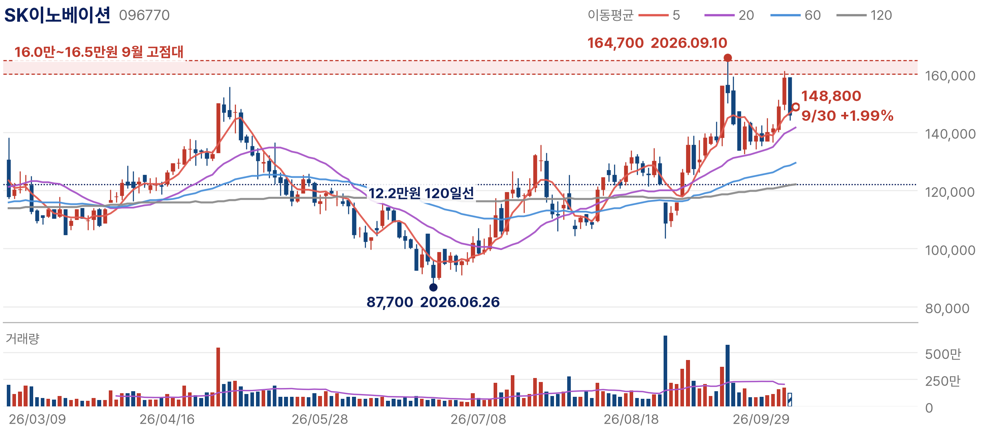
대응: 추가 상승은 재고 효과를 뺀 정제마진의 지속성으로 판단한다. 브렌트 100달러 전후의 유가와 정제마진, 재고평가 손익, 그룹Ⅲ 윤활기유 마진, 3분기 실적과 4분기 전망, 미·이란 호르무즈 협상을 확인하며, 배터리 부문의 ESS 라인 전환과 포드 합작 종료에 따른 비용 절감(연간 약 5,000억원)은 부수 변수로 본다. 호르무즈 합의로 유가가 급락하거나 경쟁사 정상화로 윤활기유 마진이 떨어지면 논리를 재검토하고, 120일선 이탈을 기대 후퇴 신호로 본다.
미국주식 세 종목은 AI 투자가 흘러가는 경로를 순서대로 담았다. GE 버노바는 데이터센터가 쓸 전력을 만드는 설비, 아리스타 네트웍스는 GPU 사이의 데이터를 옮기는 네트워크, 마이크로소프트는 그 투자비를 매출로 회수하는 클라우드·소프트웨어다. 세 종목 모두 서사가 아니라 수주와 매출, 계약 잔고로 논리를 검증할 수 있다는 점을 편입 기준으로 삼았다.
분석 체계는 국내 종목과 같다. 회사가 무엇을 하는지와 AI 투자 경로에서의 위치, 돈을 버는 구조와 그것을 증명하는 숫자, 기업에 맞춘 도식, 밸류에이션과 가격 위치, 확인 조건과 반증 조건 순서로 정리했다.
| 종목 | 핵심 질문 | 고점 대비 | 저점 대비 | 범위 위치 | 가격 단계 |
|---|---|---|---|---|---|
| GE 버노바 | 늘어난 주문과 백로그가 마진과 현금흐름으로 얼마나 빠르게 전환되는가 | -19.52% | +51.22% | 58% | 120일선 아래 횡보 |
| 아리스타 네트웍스 | 분기 매출 30억달러 이후에도 50% 안팎의 이익률이 유지되는가 | -5.20% | +76.49% | 89% | 정배열 고점권 |
| 마이크로소프트 | 늘어난 계약 잔고가 매출과 이익률로 전환돼 투자 경제성이 확인되는가 | -1.87% | +46.24% | 94% | 정배열 고점권 |
세 종목의 가격 위치는 뚜렷하게 갈린다. 아리스타 네트웍스와 마이크로소프트는 고점 부근에서 실적이 가격을 정당화하는지 확인하는 단계이고, GE 버노바는 백로그가 늘어나는 동안 주가가 고점 대비 20% 낮은 위치에 있다. 같은 AI 인프라라도 가격에 반영된 기대의 크기가 다르므로 확인할 숫자도 다르다.
GE 버노바는 가스터빈(발전)과 변압기·전력망 설비(전력화)를 함께 공급하는 전력 인프라 기업이다. AI 데이터센터 확장의 병목이 GPU에서 전력으로 옮겨가면서 주문과 백로그가 빠르게 늘고 있다. 확인이 남은 것은 늘어난 주문과 백로그가 마진과 지속적인 현금흐름으로 얼마나 빠르게 전환되는가다.
주가·거래량: 현지 9월 29일 종가 962.49달러(전일 대비 +1.34%)로 7월 6일 고점 1,195.94달러 대비 19.52% 낮고 1월 14일 저점 636.50달러 대비 51.22% 높다. 7월 고점 이후 20·60일선 아래로 내려와 1,000달러 부근의 120일선 밑에서 횡보하고 있다.
투자 논리: AI 데이터센터 확장의 병목은 GPU에서 전력으로 옮겨가고 있다. 오라클이 뉴멕시코 데이터센터의 전력 확보 지연으로 불가항력을 통지한 사례처럼 전력을 제때 확보하지 못하면 데이터센터 일정이 밀린다. GE 버노바는 가스터빈(발전)과 변압기·전력망 설비(전력화)를 모두 공급하며, 전력 부족은 서사가 아니라 주문과 백로그로 확인되고 있다. 올해 데이터센터 관련 전력화 수주는 누적 50억달러를 넘어 2025년 연간의 두 배를 웃돌았다.
| 항목 | 2026년 2분기 | 비교 |
|---|---|---|
| 수주 | 242억달러 | 유기적 +88% |
| 매출 | 111억달러 | 총 +22%, 유기적 +12% |
| 총 백로그 | 1,760억달러 | 1년 전 1,290억달러 |
| 가스터빈 백로그·슬롯 예약 | 116GW | 1분기 100GW, 연말 목표 125GW 이상 |
| 전력화 부문 백로그 | 410억달러 | 전년 대비 +69% |
펀더멘털: 수주는 유기적으로 88% 늘어 매출(유기적 +12%)보다 훨씬 빠르게 늘었고, 수주가 매출의 2.2배여서 백로그가 1년 사이 1,290억달러에서 1,760억달러로 36% 늘었다. 수요는 주문과 백로그로 확인됐고, 남은 변수는 백로그가 마진과 지속적인 현금으로 바뀌는 속도다.
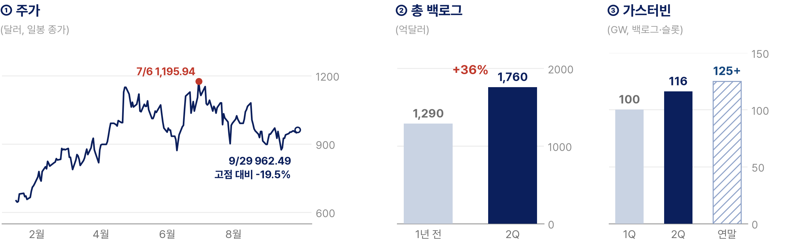
사업 구조: 매출은 발전(가스터빈)과 전력화(변압기·전력망 설비)에서 나온다. 가스터빈은 슬롯을 먼저 예약하고 수년에 걸쳐 제작·인도되는 구조여서 백로그와 슬롯 예약이 미래 매출을 보여준다. 데이터센터 관련 수주는 전력화 부문 백로그(410억달러, +69%)에 쌓이고, 증설이 끝나기 전까지는 인도 가능 물량이 매출의 상한이다.
밸류에이션: 이 종목의 배수는 백로그의 크기보다 백로그가 마진으로 전환되는 속도에 반응한다. 2분기 조정 EBITDA 마진은 11.3%로, 장비 가격 인상과 증설 비용 가운데 어느 쪽이 이기는지가 배수를 정한다. 백로그 증가는 확인된 사실이고, 가격이 기다리는 숫자는 마진이다.
판단: 2분기 잉여현금흐름 51억달러는 2025년 연간을 넘었고 회사는 2026년 가이던스(매출 455억~465억달러, 잉여현금흐름 115억~125억달러)를 올렸다. 다만 가스터빈 슬롯 예약에 따른 선수금 같은 운전자본 유입이 현금흐름을 키울 수 있어 지속적인 이익의 현금 전환과는 구분해 본다. 가스터빈 생산능력을 2028년 연 24GW, 2030년 30GW로 늘리는 투자가 이익률에 미치는 영향이 다음 판단 변수다.
기술적 위치·판단: 7월 고점 이후 20·60일선 아래로 내려왔고, 8월 17일 약 1,100달러 반등이 막힌 뒤 9월 14일 약 870달러까지 밀렸다. 현재는 20일선(약 938달러) 위, 60일선(약 970달러)과 120일선(약 1,011달러) 아래에서 횡보한다. 1,000~1,010달러의 120일선을 종가로 회복해야 7월 고점 이후 조정이 끝났다고 볼 수 있다.
| 구분 | 가격 | 해석 | 성격 |
|---|---|---|---|
| 2차 저항 | 약 1,100달러 | 8월 반등 고점 | 저항 |
| 추세 회복 | 1,000~1,010달러 | 120일선. 종가 회복 시 7월 이후 조정 종료. 그 아래 60일선(약 970달러)이 1차 관문 | 확인 |
| 무효화 | 약 870달러 | 9월 14일 저점. 이탈 시 조정 연장 | 무효화 |
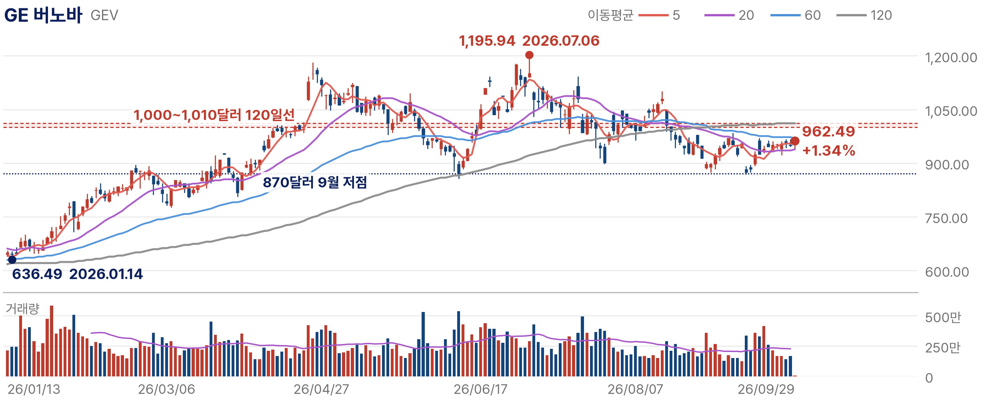
대응: 10월 하순 3분기 실적의 수주와 가스터빈 슬롯 예약(연말 125GW 목표 경로), 전력화 부문 데이터센터 수주, 장비 가격 인상의 지속 여부를 확인한다. 슬롯 예약 증가가 멈추거나 데이터센터 고객의 주문 취소·연기가 확인되면 전력 부족이 설비 발주로 이어진다는 논리를 재검토하고, 조정 EBITDA 마진(2분기 11.3%)이 다시 낮아지면 수주가 수익성으로 연결되지 않는 것으로 판단한다.
아리스타 네트웍스는 데이터센터용 이더넷 스위치와 네트워크 운영 소프트웨어를 만든다. AI 클러스터에서 GPU 숫자가 늘면 GPU 사이를 오가는 데이터가 빠르게 늘어 네트워크가 병목이 된다. 따져볼 것은 분기 매출 30억달러를 넘긴 뒤에도 성장률과 50% 안팎의 영업이익률이 함께 유지되는가다.
주가·거래량: 현지 9월 29일 종가 203.71달러로 8월 5일 고점 214.89달러 대비 5.20% 낮고 3월 30일 저점 115.42달러 대비 76.49% 높다. 20·60·120일선이 모두 우상향하는 정배열이며 주가는 고점 부근에 있다.
투자 논리: AI 클러스터에서 GPU 숫자가 늘어나면 GPU 사이를 오가는 데이터가 빠르게 늘어 네트워크가 병목이 된다. 아리스타는 이 연결을 이더넷으로 구현하며, 랙 안의 GPU를 묶는 스케일업과 랙과 랙을 잇는 스케일아웃, 데이터센터 사이 연결까지 1.6Tbps AI 패브릭 제품군을 내놨다. 하이퍼스케일러의 CAPEX가 GPU 다음으로 향하는 곳이 네트워크이며, AI 인프라 투자의 지속성을 네트워크 매출로 교차 확인할 수 있다.
| 항목 | 2026년 2분기 | 3분기 가이던스 |
|---|---|---|
| 매출 | 30억 3,600만달러 (+37.7%) | 약 33억달러 |
| 비GAAP 매출총이익률 | 63.4% | - |
| 비GAAP 영업이익률 | 49.9% | 48~49% |
| 비GAAP EPS | 1.02달러 | 1.06~1.08달러 |
펀더멘털: 3분기 가이던스 약 33억달러는 2분기보다 약 9% 많은 수준으로, 성장이 한 분기 만에 꺾이지 않는다는 회사의 전망이다. 영업이익률 가이던스 48~49%는 2분기 49.9%보다 소폭 낮아 성장 속도와 이익률이 함께 유지되는지가 다음 분기 확인 대상이다. 매출 100달러 가운데 약 50달러가 영업이익으로 남는 구조가 AI 네트워크 수요의 질을 보여준다.
사업 구조: 매출은 스위치 하드웨어와 운영 소프트웨어·서비스에서 나오고 고객은 대형 클라우드 사업자 비중이 크다. 그래서 소수 대형 고객의 CAPEX 가이던스가 가장 중요한 선행지표이고, 제품 영역이 랙 안·랙 사이·데이터센터 사이로 넓어질수록 고객당 매출이 커진다.
밸류에이션: 고점 부근의 가격은 좋은 실적을 이미 상당 부분 반영하고 있다. 이 배수가 유지되려면 3분기 가이던스 달성과 함께 4분기에도 30%대 성장이 이어져야 한다. 실적이 가격을 정당화해야 하는 단계여서 기대에 못 미치는 숫자에 가격이 민감하다.
판단: 2분기에 분기 매출 30억달러를 처음 넘기고도 영업이익률 50% 안팎을 지키고 있다는 점이 하드웨어 기업으로서는 드물다. 2분기 비GAAP EPS를 단순 연율화한 4.08달러 기준 약 50배여서 이익 성장이 가격에 상당 부분 반영돼 있다.
기술적 위치·판단: 3월 30일 저점 이후 20·60·120일선이 모두 우상향하는 정배열이다. 8월 5일 고점 이후 9월 3일 약 182달러까지 조정받았다가 9월 25일 약 212달러까지 회복해 고점을 다시 시험한 뒤 29일 203.71달러로 밀렸다. 212~215달러를 넘어서면 신고가 영역이지만, 20일선(약 198달러) 이탈은 단기 과열 해소의 신호다.
| 구분 | 가격 | 해석 | 성격 |
|---|---|---|---|
| 1차 저항 | 212~215달러 | 8월 고점(214.89달러)과 9월 고점 | 확인 |
| 1차 지지 | 약 198달러 | 20일선 | 지지 |
| 중기 방어선 | 약 189달러 | 60일선 | 지지 |
| 추세 훼손 | 약 175달러 | 120일선. 이탈 시 정배열 훼손 | 무효화 |
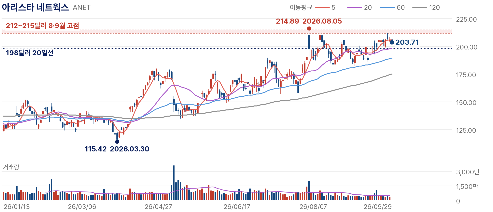
대응: 신규 접근은 가이던스 확인 이후가 적절하다. 10월 하순 하이퍼스케일러 CAPEX 가이던스, 11월 초 발표될 3분기 실적의 가이던스(약 33억달러) 달성과 4분기 전망, 1.6Tbps 제품 전환에 따른 매출총이익률을 확인한다. 주요 하이퍼스케일러가 네트워크 투자 속도를 늦추거나 매출 성장률이 20%대로 둔화되면 네트워크 병목 논리를 재검토하고, 영업이익률 45% 하회는 경쟁 심화 신호로 본다.
마이크로소프트는 Azure 클라우드와 Microsoft 365·Copilot 소프트웨어를 판매한다. 다른 AI 인프라 종목이 투자비를 받는 쪽이라면 마이크로소프트는 투자비를 쓰고 회수해야 하는 쪽이다. 투자 회수는 장기 계약 확보, 매출 전환, 투자 경제성 확인의 세 단계로 나눠 검증한다.
주가·거래량: 현지 9월 29일 종가 509.70달러(전일 대비 +0.15%)로 9월 25일 고점 519.40달러 대비 1.87% 낮고 6월 25일 저점 348.54달러 대비 46.24% 높다. 7월 말 실적 발표 직후 갭 상승으로 120일선을 넘어선 뒤 20일선 위에서 고점을 높이고 있다.
투자 논리: 다른 AI 인프라 종목이 투자비를 받는 쪽이라면 마이크로소프트는 투자비를 쓰고 회수해야 하는 쪽이다. AI 투자가 실제 매출로 전환되는지를 가장 직접적으로 보여주며, 전환 경로는 Azure와 Microsoft Cloud, Microsoft 365 Copilot이다.
| 항목 | FY26 4분기 (2026년 4~6월) | 전년 대비 |
|---|---|---|
| 매출 | 900억달러 | +18% |
| Microsoft Cloud 매출 | 593억달러 | +27% |
| Azure·기타 클라우드 서비스 | - | +43% |
| 상업용 잔여이행의무(RPO) | 6,780억달러 | +84% (OpenAI 제외 +25%) |
| Microsoft Cloud 매출총이익률 | 65% | 하락 |
| CAPEX (금융리스 포함) | 약 410억달러 | +69% |
펀더멘털: Azure 성장률 43%는 전체 매출 성장률 18%의 두 배를 넘지만 전사와 Cloud 매출 전체가 AI 매출은 아니다. RPO는 84% 늘었으나 OpenAI 계약을 빼면 25% 증가이고 12개월 안에 인식될 비중은 약 30%이며, Cloud 매출총이익률은 65%로 전년보다 낮아졌다. 장기 계약 확보는 확인됐지만 매출 전환과 투자 경제성은 별도로 확인할 단계다.
사업 구조: 매출은 클라우드(Azure 등), 생산성 소프트웨어(Microsoft 365·Copilot), 개인용 컴퓨팅으로 나뉘며 AI 투자의 회수는 앞의 두 축에서 일어난다. CAPEX가 먼저 쓰이고 매출은 사용량과 좌석 수에 따라 나중에 들어와 초기에는 감가상각이 먼저 늘어나며, RPO는 이 시차를 메우는 계약 잔고다.
밸류에이션: 고점 부근의 가격은 7월 실적의 성장 속도를 높게 평가한 위치여서, 성장률이 꺾이면 CAPEX는 곧 비용 부담으로 해석된다.
판단: 4분기 금융리스 포함 CAPEX는 약 410억달러(+69%)로 분기 매출 900억달러의 약 46%다(현금 기준 유형자산 취득액 358억달러). Azure·RPO 성장률이 CAPEX보다 높다는 것만으로 회수가 증명되지 않으며 감가상각과 Cloud 매출총이익률, 잉여현금흐름이 함께 버텨야 한다. FY26 GAAP EPS 17.95달러 기준 PER 약 28배는 다음 분기에도 성장률이 유지돼야 정당화된다.
기술적 위치·판단: 6월 25일 저점 이후 7월 말 갭 상승으로 120일선을 넘어섰고, 8월 이후 20일선(약 501달러) 위에서 고점을 높여 9월 25일 고점을 기록했다. 60일선(약 474달러)과 120일선(약 436달러)이 우상향하는 정배열이다. 고점을 높이는 흐름이 이어지려면 9월 저점(약 486달러)과 20일선이 지켜져야 한다.
| 구분 | 가격 | 해석 | 성격 |
|---|---|---|---|
| 1차 저항 | 516~519달러 | 9월 고점(9월 25일 519.40달러) | 확인 |
| 1차 지지 | 약 500달러 | 20일선 | 지지 |
| 중기 방어선 | 약 486달러 | 9월 저점 | 지지 |
| 추세 훼손 | 약 474달러 | 60일선. 이탈 시 7월 이후 상승 추세 약화 | 무효화 |
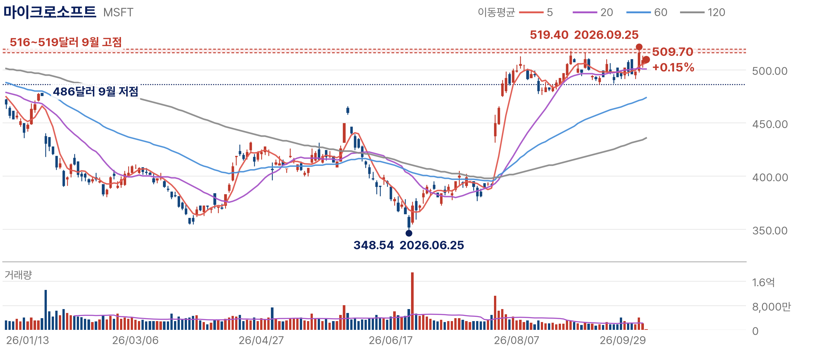
대응: 10월 하순 FY27 1분기 실적의 Azure 성장률, OpenAI 제외 RPO 증가율과 12개월 내 인식분, Cloud 매출총이익률과 감가상각, 잉여현금흐름을 확인한다. CAPEX는 계속 늘어나는데 Azure 성장률이 30%대 초반으로 꺾이거나 RPO 증가율이 크게 둔화되면 투자비의 매출 전환 논리를 재검토한다.
세 자산은 주식과 가격 결정 구조가 다르다. 아래 체계처럼 미국 정책·실질금리와 달러(DXY), 유동성·위험선호가 먼저 BTC 방향과 현물 ETF·ETP, 거래소 현물 수급을 움직이고, 가격은 거래량과 추세, 지지·저항에서 확인되며, 그 위에서 개별 네트워크와 이벤트가 자산 간 차이를 만든다. 금리 하락과 달러 약세가 언제나 상승을 만드는 것은 아니며, 기술적 분석은 상승의 원인이 아니라 진입·확인·무효화의 기준으로 쓴다. 파생상품 미결제약정·펀딩비·청산은 확인 가능한 자료가 있을 때만 보완한다.
운영 방침은 자산마다 다르다. 이더리움은 사용 기반과 ETF라는 직접 자금 경로를 가진 대형 자산, 스택스는 BTC 안정과 생태계 촉매가 겹칠 때 상대강도가 살아날 수 있는 조건부 상승 아이디어, 지캐시는 프라이버시 수요와 접근성 확대로 재평가가 진행된 자산이어서 눌림과 지지를 확인한 뒤 담는다. 세 자산 모두 위험선호와 유동성에 가장 민감해 국내주식의 완충 수단이 아니며, 비중은 크립토 운용자산 안에서 관리한다.
| 종목 | 핵심 질문 | 고점 대비 | 저점 대비 | 범위 위치 | 가격 단계 |
|---|---|---|---|---|---|
| 이더리움 (ETH/USDT) | 현물 ETF 순유입과 금리·달러 안정 속에 9월 고점대(2,780~2,810달러)를 넘어서는가 | -21% | +81% | 63% | MA(25) 위 |
| 스택스 (STX/BTC) | BTC 안정과 9월 촉매가 STX/BTC 상대강도와 현물 거래량 회복으로 이어지는가 | -18% | +110% | 71% | MA(7) 부근 |
| 지캐시 (ZEC/ETH) | 접근성 확대 이후 충분한 눌림과 지지가 확인되는가 | -17% | 약 9.6배 | 81% | MA(7) 하회 |
가격은 이더리움은 달러(USDT), 스택스는 비트코인, 지캐시는 이더리움 대비로 표시하고 상대가격에는 달러 환산값을 함께 적었다. 상대가격의 상승은 달러 수익률과 같지 않고, 상대 이동평균선 하회는 상대추세의 약화이지 펀더멘털 소멸의 증거가 아니다.
이더리움은 기업이 아니어서 이익 대신 네트워크 사용과 자금 흐름으로 본다. 스테이블코인의 절반 가까이가 이더리움에 발행돼 있고 공급량의 약 3분의 1이 스테이킹에 묶여 있다. 10월 상승 조건은 현물 ETF 순유입의 지속, 금리·달러의 안정, 9월 고점대 저항의 돌파가 함께 나타나는가다.
가격·네트워크 흐름: 9월 29일 DefiLlama 집계로 전체 스테이블코인 3,063억달러 가운데 1,464억달러, 약 48%가 이더리움에 발행돼 있고, 스테이킹된 ETH는 8월 기준 4,170만 개로 공급량의 약 3분의 1이다. 가격은 바이낸스 9월 29일 일봉 기준 2,719.33달러로 6월 저점 1,505.68달러보다 81% 높고 2025년 12월 고점 3,447.44달러보다 21% 낮으며, MA(7) 2,693.91달러, MA(25) 2,578.10달러, MA(99) 2,117.88달러를 모두 웃돈다.
자금 흐름: 이더리움에 직접 들어오는 자금은 미국 현물 ETF 순유입으로 본다. Farside 집계로 9월 23~29일 5거래일 동안 2억 7,190만달러가 순유입됐고, 29일 하루는 280만달러 순유출이었다. 하루 유출보다 5거래일 누적 유입이 흐름을 더 잘 보여주며, 이 유입이 10~20거래일로 이어지는지가 첫 확인 대상이다. 유럽 ETP와 기존 신탁, 스테이킹 ETF 승인 기대는 서로 다른 경로여서 합산하지 않는다.
투자 논리: 이더리움은 프로그램(스마트 계약)이 실행되는 블록체인이다. 스테이블코인 발행과 송금, 탈중앙화 금융(DeFi)의 대출·거래, 국채·펀드 같은 실물자산의 토큰화가 이 위에서 이뤄지고 모든 거래의 수수료는 ETH로 낸다. 스테이블코인 결제와 기관 자금이 같은 네트워크로 모이고 있다는 점을 이더리움을 써야 하는 실제 경제활동의 근거로 본다.
네트워크 지표: 스테이블코인 발행 비중 약 48%는 결제 수요, 스테이킹 4,170만 개는 장기 보유와 네트워크 참여를 보여준다. 두 지표가 유지되는 것은 사용 기반이 남아 있다는 뜻이지만, 그것만으로 가격 조정의 원인을 위험선호로 단정하지는 않는다. 단기 가격은 ETF 수급과 금리·달러, BTC 방향에 더 크게 반응한다.
가격 판단: 암호자산에는 PER 같은 배수가 없어 가격은 공통 요인과 자금 흐름으로 판단한다. 가격은 6월 저점 대비 81% 올랐지만 2025년 12월 고점은 회복하지 못했다. 10월 상승 경로는 ETF 순유입 지속과 금리·달러 안정 속에 2,780~2,810달러 저항을 종가로 넘어서는 것이다.
판단: 결제·금융 인프라라는 사용 기반과 ETF라는 직접 자금 경로를 함께 가진 대형 자산이다. 8월 중순 급등 이후 2,500~2,800달러에서 머물고 있어, 저항 돌파가 ETF 순유입과 함께 확인되면 비중을 늘리고 MA(25)를 종가로 지키지 못하면 줄이는 방식으로 운영한다. 위험선호가 후퇴하면 비트코인보다 낙폭이 클 수 있다.
기술적 위치·판단: 6월 저점 이후 8월 중순 급등으로 2,500달러대에 올라선 뒤 2,500~2,800달러에서 머물고 있다. 9월 21일 약 2,810달러 고점 이후 가격은 MA(7)을 소폭 웃돌고, MA(25)와 MA(99)가 아래에서 우상향한다. MA(25) 2,578.10달러가 비중 조절의 기준선이다.
| 구분 | 가격 | 해석 | 성격 |
|---|---|---|---|
| 2차 저항 | 3,447.44달러 | 2025년 12월 고점 | 저항 |
| 돌파 확인 | 2,780~2,810달러 | 9월 고점대. ETF 순유입과 함께 종가 돌파 시 비중 확대 | 확인 |
| 기준선 | 2,578.10달러 | MA(25). 종가 이탈이 ETF 누적 순유출과 겹치면 반증 | 지지 |
| 추세 기준 | 2,117.88달러 | MA(99). 8월 급등 이전 추세선 | 무효화 |
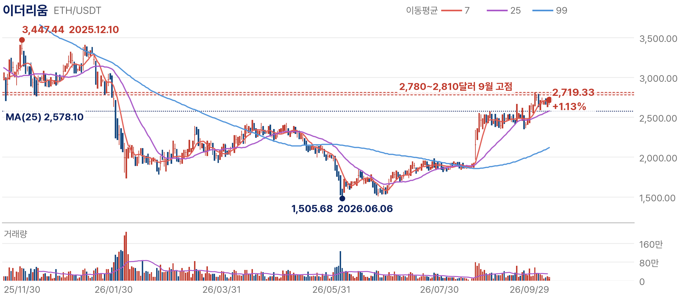
대응: 현물 ETF의 5~20거래일 누적 순유입(집계 시점 명시), 10년물 금리와 달러지수의 방향, 2,780~2,810달러 저항의 종가 돌파 여부를 확인하고, 스테이블코인 발행 잔액과 비중, 토큰화 국채·펀드 규모는 사용 기반의 점검 지표로 본다.
반증 조건: ETF 자금이 누적 순유출로 돌아서고 가격이 MA(25)를 종가로 이탈하는 경우, 또는 스테이블코인 발행이 다른 블록체인으로 옮겨가 이더리움 비중이 뚜렷하게 낮아지는 경우다.
스택스는 비트코인에 연결된 스마트 계약 계층이다. 비트코인은 가장 큰 가치저장 자산이지만 기본 레이어에서는 대출·거래 같은 금융 애플리케이션을 직접 돌리기 어렵고, 스택스는 sBTC로 그 빈자리를 채운다. 10월 상승 여력은 BTC 안정 속에 9월의 인프라 정비와 보상 프로그램이 STX/BTC 상대강도와 현물 거래량 회복으로 이어지는가에 달려 있다.
가격·네트워크 흐름: 차트는 달러가 아닌 비트코인 대비 가격이다. 9월 29일 0.00000380BTC로 8월 저점 0.00000181BTC보다 110% 높고 5월 고점 0.00000462BTC보다 18% 낮다. BTC 약 8만 3,600달러(9월 29일 오후 2시 45분 미 동부시간, Fortune)로 환산하면 약 0.32달러이며, 상대가격의 상승은 달러 수익률과 같지 않다. 1분기 스냅숏의 sBTC 예치 5억 4,500만달러, DeFi 투입 1억 2,100만달러, 누적 지갑 40만 개는 과거 현황이어서 9월 성장의 근거로 쓰지 않는다.
투자 논리: 비트코인은 가장 큰 암호자산 네트워크이자 기관과 ETF가 보유하는 가치저장 자산이지만, 기본 레이어는 안전성을 위해 프로그래밍 기능을 최소화해 금융 애플리케이션을 직접 돌리기 어렵다. 스택스는 스택스 블록을 비트코인 블록에 기록해 보안을 빌리고 비트코인과 1:1로 연동되는 sBTC로 BTC를 금융에 쓸 수 있게 한다. 연결 고리는 비트코인의 가치저장 수요 → 비트코인 기반 금융 확장 → 스택스 생태계 사용 증가다.
9월 촉매: 9월에는 공식 발표로 확인되는 변화가 이어졌다. 4일 Ankr, The Tie, HashKey가 sBTC 서명자로 합류했고, 10일 Dual Stacking이 종료되며 Bitcoin Staking으로 전환됐다. 같은 날부터 12월 10일까지 월 1 BTC 규모의 DeFi 보상 프로그램이 시작돼 10월 10일 중간 점검을 앞두고 있다. 효과는 달러 표시 TVL이 아니라 BTC 수량 기준 sBTC 순예치와 STX 현물 거래량으로 확인한다. 달러 TVL은 BTC 가격만 올라도 늘기 때문이다.
가격 판단: 8월 저점 이후 두 달 만에 비트코인 대비 110% 오른 가격은 생태계 확장 기대를 빠르게 반영했다. 10월에 이 흐름이 이어지려면 BTC가 안정된 가운데 STX/BTC가 MA(25) 위에서 고점을 다시 높이고 현물 거래량이 늘어야 한다. BTC 급락 국면에서는 상대강도와 관계없이 달러 가격이 크게 흔들릴 수 있다.
판단: 비트코인 금융 확장이라는 구조적 테마에 9월의 인프라 정비와 보상 프로그램이 더해져, 향후 한 달 동안 상대강도가 다시 살아날 여지가 있는 조건부 상승 아이디어로 본다. BTC가 지지선을 지키고 STX/BTC가 MA(25)를 유지하는 동안 분할로 접근하며, 10월 10일 보상 프로그램 점검에서 BTC 수량 기준 sBTC 순예치가 늘었는지로 논리를 검증한다. 급등 이후 되돌림이 큰 자산이어서 비중은 크립토 운용자산 안에서 제한한다.
기술적 위치·판단: STX/BTC는 8월 저점 이후 급반등해 MA(25) 0.00000359BTC 위로 올라섰고, 9월 29일 가격은 MA(7) 0.00000383BTC 부근에 있다. MA(99) 0.00000280BTC는 8월 이후 상대추세의 기준선이다. MA(25) 유지가 분할 접근의 기준이고, MA(99) 하회는 상대추세의 약화 신호로 본다.
| 구분 | 가격 | 해석 | 성격 |
|---|---|---|---|
| 고점 | 0.00000462BTC | 5월 고점. 약 0.39달러 | 저항 |
| 단기 기준 | 0.00000359BTC | MA(25). 약 0.30달러. 유지 시 분할 접근 | 지지 |
| 상대추세 기준 | 0.00000280BTC | MA(99). 약 0.23달러. 하회 시 상대추세 약화 | 무효화 |
| 저점 | 0.00000181BTC | 8월 저점. 약 0.15달러 | 기준 |
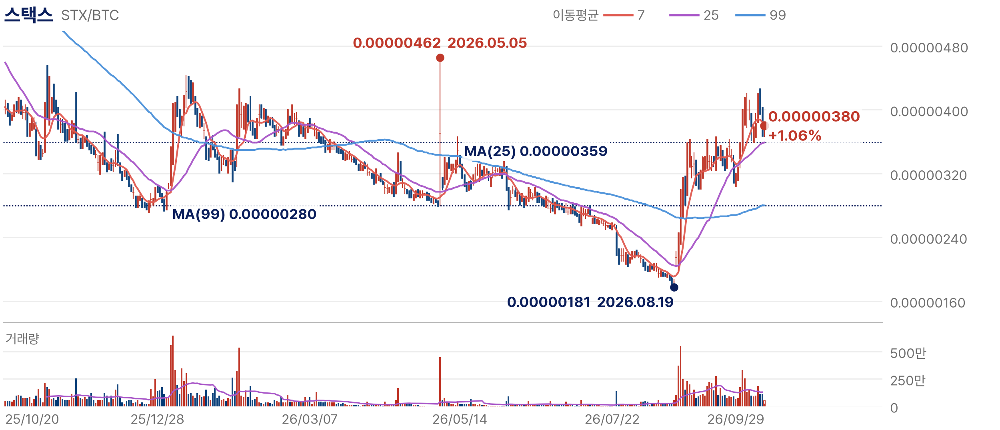
대응: BTC 방향과 현물 ETF 누적 흐름, STX 현물 거래량, STX/BTC의 MA(25) 유지, 10월 10일 보상 프로그램 점검 결과와 BTC 수량 기준 sBTC 순예치를 확인한다.
반증 조건: BTC가 급락하거나 STX/BTC가 MA(99)를 밑돌아 상대추세가 약해지는 경우, 보상 프로그램 이후에도 sBTC 순예치(BTC 수량)가 늘지 않는 경우다. 브리지·스마트 계약 보안 사고와 거래소 유동성 축소, 높은 변동성도 리스크다.
지캐시는 거래 정보를 보호하는 프라이버시 암호자산이다. 비트코인과 같은 발행 구조를 가졌지만 영지식증명으로 송금인·수취인·금액을 암호화하는 차폐 거래를 제공한다. 이더리움 대비 가격은 1년 사이 9배 넘게 올랐다. 상승의 배경은 프라이버시 수요의 재평가와 투자 접근성 확대이고, 10월의 과제는 충분한 눌림 이후 지지가 확인되는가다.
가격·네트워크 흐름: 차트는 이더리움 대비 가격이다. 9월 29일 0.52372ETH로 2025년 10월 0.05442ETH에서 약 9.6배 올랐고 9월 고점 0.63134ETH보다 17% 낮으며, 같은 Binance 일봉의 ETH/USDT 2,719.33달러로 환산하면 약 1,424달러다. 7월 29일 새 차폐 풀(Ironwood)이 가동돼 첫날 약 17만 6,000ZEC가 옮겨갔는데, 이 이전에는 공급 검증과 보안을 위해 기존 Orchard 자금이 옮겨가는 몫이 포함돼 신규 결제 수요로 보지 않는다. Million Miner 9월 9일 집계로 시가총액은 약 210억달러, 암호자산 10위권 부근이었고 순위는 집계 범위에 따라 달라진다.
투자 논리: 비트코인과 달리 지캐시의 차폐 거래는 주소와 금액을 암호화하고, 사용자는 조회 키로 감사인이나 규제기관에 내역을 선택적으로 공개할 수 있다. 급여 지급이나 기업 간 결제처럼 거래 정보가 드러나면 곤란한 경제활동에서 프라이버시가 사용가치가 되고, 스테이블코인과 기관 자금이 블록체인으로 들어오면서 이 기능이 다시 거론되고 있다.
접근성 확대: 21Shares는 9월 22일 유럽 거래소에 현물 담보 방식의 Zcash ETP를 상장했다. 거래소 계좌로 ZEC에 투자할 수 있는 통로가 넓어졌다는 사실이지만, 상장 자체가 가격 상승의 단일 원인은 아니며 유럽 ETP의 실제 순유입은 별도로 확인해야 한다. 미국에 상장된 지캐시 관련 상품은 발행사·티커·수급 자료가 서로 맞지 않아 이번 판단에 반영하지 않았다.
| Bitcoin식 공개 거래 | Zcash 차폐(Shielded) 거래 | |
|---|---|---|
| 송금인 | 공개 주소가 장부에 남음 | 암호화 |
| 수취인 | 공개 주소가 장부에 남음 | 암호화 |
| 금액 | 누구나 조회 가능 | 암호화 |
| 검증 방식 | 모든 노드가 거래 내용을 보고 검증 | 영지식증명: 유효성만 검증, 내용은 비공개 |
| 공개 범위 | 전면 공개 | 조회 키로 감사인·규제기관에 선택적 공개 |
| 쓰임 | 투명한 가치 이전 | 급여 지급·기업 간 결제 등 정보 노출이 곤란한 거래 |
가치 포착 구조: 지캐시의 가치는 결제 규모보다 보이지 않는 결제라는 기능에서 나온다. 공급이 정해져 있고, 암호자산을 기능별로 다시 평가하는 흐름에서 프라이버시가 하나의 범주로 인정받는 과정이 이번 상승의 긍정적 해석이다. 다만 같은 기능이 자금세탁 방지 규제와 충돌해 사용가치가 커질수록 규제 리스크도 함께 커지는 구조다.
가격 판단: 이더리움 대비 9.6배 오른 가격은 프라이버시 수요의 재평가와 접근성 확대를 함께 반영했다. 시가총액 5위권 진입은 현재 사실이 아니라 가격이 더 오를 경우의 시나리오일 뿐이다. ZEC의 강세가 암호자산 전체의 강세로 이어지는지는 BTC 방향과 ETF 수급, 시장 폭으로 따로 확인한다.
판단: 최근 상승폭이 커 현재 가격에서 적극적으로 매수하거나 추격하는 관점은 아니며, MA(7)이 가격 위로 올라가 단기 탄력도 꺾였다. 충분한 눌림과 지지 확인이 나타날 경우, 운영 중인 크립토 자산의 10% 이내에서 분할로 담아볼 수 있다. 10%는 전체 금융자산이 아니라 크립토 운용자산을 기준으로 한 ZEC의 상한이며, 지지 확인은 아래 가격 확인 구간의 MA(25)와 MA(99)에서 판단한다.
기술적 위치·판단: ZEC/ETH는 9월 17일 0.63134ETH 고점 이후 밀려 9월 29일 MA(7) 0.57001ETH 아래, MA(25) 0.52147ETH 부근에 있다. MA(99) 0.34122ETH는 9월 급등 이전 추세의 기준이다. MA(25) 이탈은 상대추세의 되돌림이 커지는 신호이며, 그 자체로 펀더멘털의 소멸을 뜻하지는 않는다.
| 구분 | 가격 | 해석 | 성격 |
|---|---|---|---|
| 고점 | 0.63134ETH | 9월 고점. 약 1,717달러 | 저항 |
| 단기 기준 | 0.57001ETH | MA(7). 약 1,550달러. 가격이 아래로 내려와 단기 탄력 약화 | 저항 |
| 지지 확인 | 0.52147ETH | MA(25). 약 1,418달러. 지지 확인 시 분할 기준 | 지지 |
| 추세 기준 | 0.34122ETH | MA(99). 약 928달러. 급등 이전 추세선 | 무효화 |
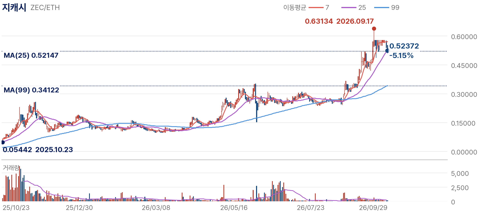
리스크: ① 규제: 여러 국가가 자금세탁 방지를 이유로 프라이버시 코인을 규제하며, 국내 원화 거래소들은 2020년 거래 지원을 종료했다. ② 거래소 상장: 해외 거래소도 규제 요구에 따라 상장을 폐지하거나 차폐 주소 입출금을 제한할 수 있다. ③ 기술: 5월 말 기존 차폐 풀(Orchard)에서 위조 가능성이 있는 결함이 발견돼 긴급 업그레이드가 진행됐고 가격이 하루 30% 넘게 급락했다. ④ 변동성: 급등한 만큼 되돌림 폭도 크다.
※ 대체자산은 고위험 자산이며 비중은 크립토 운용자산 안에서 관리한다. Ironwood 이전 규모 CoinDesk(7/29), 목적 Shielded Labs, Orchard 결함 KuCoin 리서치, 시가총액 Million Miner(9/9), ZEC ETP 21Shares(9/22) 기준.
10월 일정은 본 보고서의 가설을 검증하는 일자다. 영향을 받는 업종과 종목, 확인 항목을 함께 정리했다.
| 날짜 | 이벤트 | 영향 자산군 | 관련 종목 | 핵심 체크포인트 |
|---|---|---|---|---|
| 9/30 밤 | 미국 8월 PCE (현지 9/30) | 시장 전체 | - | 근원 PCE 방향, 연간 개정 폭 |
| 10/1 새벽 | 마이크론 실적 (현지 9/30) | 반도체 | SK스퀘어 · 이오테크닉스 · ISC | 다음 분기 가이던스, HBM 매출 |
| 10/1 | 한국 9월 수출입동향 | 반도체 · 조선 | SK스퀘어 · HD한국조선해양 | 반도체 수출 물량, 선박 수출 |
| 10/2 밤 | 미국 9월 고용보고서 | 시장 전체 | - | 비농업 고용, 임금 |
| 10/7~8 | 삼성전자 잠정실적(예상) | 반도체 | SK스퀘어 · 이오테크닉스 | 전사 매출·영업이익 (부문 이익률은 확정실적) |
| 10/14 밤 | 미국 9월 CPI | 성장주 · 디지털자산 | 마이크로소프트 · 디지털자산 | 근원 월간 0.3% 지속 여부 |
| 10/15 | 미국 PPI(밤) · TSMC 실적(예상) | 반도체 · AI 인프라 | ISC · 아리스타 네트웍스 | TSMC 4분기 가이던스, CAPEX |
| 10/22 | 한국은행 금통위 | 금융 · 원화 | DB손해보험 | 금리 결정, 성장·물가 전망 |
| 10월 하순 | SK하이닉스·빅테크 실적(예상) | 반도체 · AI 인프라 | SK스퀘어 · 마이크로소프트 · GE 버노바 | HBM 공급 계획, CAPEX 가이던스 |
| 10월 하순 | 국내 3분기 실적(예상) | 전력기기 · 조선 · 2차전지 | LS ELECTRIC · HD한국조선해양 · 삼성SDI | 수주잔고, 영업이익률, AMPC 제외 이익 |
| 10/29 새벽 | FOMC 결과 (현지 10/27~28) | 시장 전체 | - | 추가 인상 여부와 경로 |
| 10/29 밤 | 미국 3분기 GDP · 9월 PCE | 시장 전체 | - | 성장과 물가의 동행 여부 |
| 수시 | 미·이란 호르무즈 협상 | 에너지 · 조선 | SK이노베이션 · HD현대 | 단계적 합의, 브렌트 100달러 |
| 수시 | 방산 수출 · 조선 수주 | 방산 · 조선 | 한화에어로스페이스 · HD한국조선해양 | 계약 규모, 선가 |
| 수시 | 미중 무역휴전 후속 협상 | AI · 반도체 장비 | - | 수출통제·관세 세부안 |
매주 확인: ① 미국채 10년물 5% 하회 여부 ② 원/달러 1,400원 방어 ③ 외국인 순매수의 업종 확산과 자사주 매입 종료 이후 수급 ④ 업종별 이익 추정치 변화율 ⑤ 신용융자 잔고 방향 ⑥ 상승 종목 수와 지수 방향의 일치 여부 ⑦ BTC 방향과 현물 ETF·ETP 누적 흐름. 금리·유가 경고선은 장중 터치(경고), 종가 돌파(확인), 3거래일 이상 안착(반증)으로 구분하고 매크로 악화는 밸류에이션 조정 신호로 본다. 추정치 하향 전환, 4분기 가이던스 하향, 하이퍼스케일러 CAPEX 하향 중 둘 이상이 동시에 확인되면 핵심 전제를 폐기하며, 앞의 두 조건은 연결될 수 있어 따로 세지 않는다.
Top Picks 반증 조건: SK스퀘어는 SK하이닉스 4분기 추정치 하향 또는 할인율 40%대 고착, HD현대는 정유·조선 이익 동반 둔화에 따른 2026년 추정치 하향, HD한국조선해양은 신규 수주 선가의 하락 전환과 영업이익률 2분기 연속 하락, LS ELECTRIC은 수주잔고 2분기 연속 정체, 한화에어로스페이스는 지상방산 영업이익률 하락과 납품 지연, DB손해보험은 K-ICS 비율 추가 하락과 장기보험손익 후퇴다.
※ 본 자료는 정보 제공을 목적으로 작성되었으며 특정 종목의 매매를 권유하지 않는다. 기재된 수치는 작성 시점 기준이며 이후 변동될 수 있다. 투자 판단의 최종 책임은 투자자 본인에게 있다.